Integrated Agronomic Case Study: Design to Report
agriRank Development Team
Source:vignettes/v09-integrated-agronomic-case-study.Rmd
v09-integrated-agronomic-case-study.RmdIntegrated instructional vignette
Package: agriRank Version
targeted: 0.14.0 Purpose: a
practical starting point for students, researchers, reviewers and
analysts who need to move from a field notebook to a defensible
agronomic recommendation, without losing the logic of the experimental
design along the way.
1. Why this vignette exists
Nonparametric analysis becomes difficult when several decisions arrive at the same time: which unit was randomized, whether a factor is qualitative or a gradient, whether the response is a measurement at all, which comparisons are admissible, how much uncertainty a recommendation carries, and what to report when the data cannot answer the question that was asked.
agriRank is organised so that those decisions can be
taken in a defensible order. The central rule is short:
Declare the randomization first. Then choose the analysis the design permits. Check the fit before interpreting it. Report every estimate with the uncertainty it actually carries, and report nothing the data do not contain.
That last clause does more work than it appears to. A large part of this package consists of functions that decline to answer, by name and with a reason, rather than return a number that looks like an answer. This vignette shows the whole sequence on one experiment, and every refusal it produces is treated as a result, not as an obstacle.
The other vignettes each own one analytical block. This one connects them.
2. Learning objectives
After working through this vignette, the reader should be able to:
- identify the experimental unit and the randomization before choosing any test, and recognise when a design declaration has been made incorrectly;
- represent a randomized complete block factorial explicitly, and understand what the declaration then forbids;
- distinguish an omnibus rank test from the comparisons that may follow it;
- read relative marginal effects rather than treatment means when the response is analysed by ranks;
- produce compact letter displays that are computed inside the correct stratum, and explain why a display computed across strata is not interpretable;
- decide whether a quantitative treatment should be analysed as a factor or as a gradient, and defend the decision on design grounds rather than on fit;
- fit a nonparametric regression without selecting the engine by p-value;
- separate the three explained-variation indices and say what each one answers;
- report where a response is still changing, rather than where a fitted curve happens to peak;
- attach a confidence interval to the location of an optimum, and detect when no interior optimum is identified;
- distinguish an interval for a fitted curve from an interval for the next plot, and produce the second when the recommendation concerns a plot;
- check a model without assuming a distribution, and know which of the checks has power;
- analyse a treatment whose admissible values are whole numbers, without rounding a continuous optimum;
- analyse experiments whose datum is a censored time or an order rather than a measurement;
- run a sensitivity analysis and a missing-data sensitivity analysis as routine parts of the workflow rather than as afterthoughts;
- assemble tables, figures and a reproducible report from the fitted objects;
- recognise the recurring mistakes this package is built to prevent, and name the function that prevents each one.
3. The package in one map
3.1 Instructional stages
| Stage | What decision it settles | Main functions |
|---|---|---|
| Design | which unit was randomized, and what that permits |
agri_design(), validate_agri_design(),
design_summary(), simulate_agri()
|
| Omnibus | is there an effect at all, in the declared structure |
agri_rank(), np_crd(),
np_rcbd(), np_factorial(),
np_splitplot(), np_splitsplit(),
np_stripplot()
|
| Effects | how large, on a scale ranks support |
agri_effects(), agri_format_ci()
|
| Comparisons | which pairs differ, with multiplicity controlled |
agri_pairs(), agri_conover(),
agri_cld(), agri_contrast()
|
| Gradients | what shape the response has over a quantitative treatment |
agri_np_regression(), agri_np_predict(),
agri_np_plot(), agri_np_compare(),
agri_np_diagnostics()
|
| Recommendation | which rate to recommend, for whom, and with what interval |
agri_np_sizer(),
agri_np_significant_slope(),
agri_np_optimum_test(),
agri_np_quantile_curves()
|
| Uncertainty | what covers the curve, and what covers the next plot |
agri_np_bootstrap(), agri_np_conformal(),
agri_np_coverage()
|
| Model checking | does the fit describe the data, without a distribution | agri_np_simdiag() |
| Integer decisions | treatments that can only be whole numbers |
agri_integer_predict(),
agri_integer_optimum(),
agri_integer_difference(),
agri_integer_confset()
|
| Repeated and missing | subject dependence, and incompleteness |
agri_repeated(), np_repeated(),
agri_missing_report(),
agri_missing_sensitivity()
|
| Several responses or sites | multivariate and multi-environment structure |
agri_multivariate(), agri_multienv()
|
| Non-measurements | censored times, and orders |
agri_np_timetoevent(),
agri_rankings()
|
| Sensitivity | does the conclusion depend on one analytical choice |
agri_sensitivity(), agri_batch()
|
| Communication | tables, figures, reports, export |
agri_table(), agri_plot(),
agri_report(), agri_dashboard(),
agri_theme(), agri_save_figure(),
export_results()
|
The progression is deliberate. A reader should not begin with conformal prediction because it carries a guarantee, or with quantile curves because they produce an attractive figure. Each extension should answer a question that the experiment actually raises.
3.2 Inspect the package programmatically
# Which methods does the package know about, and what does each assume?
head(agri_methods(), 10)
#> domain method
#> 1 one-way Kruskal / permutation
#> 2 RCBD Friedman / restricted permutation
#> 3 factorial rankFD / ARTool / permutation
#> 4 multiple comparisons Wilcoxon / Conover / maxT
#> 5 split-plot ARTool
#> 6 split-split ARTool hierarchical strata
#> 7 strip-plot ARTool strip-specific random strata
#> 8 repeated nparLD / MANOVA.RM / native wild
#> 9 repeated+missing native wild ATS/WTS/MATS
#> 10 multivariate MANOVA.RM MANOVA / MANOVA.wide / multRM
#> status
#> 1 implemented
#> 2 implemented
#> 3 adapter+implemented
#> 4 implemented+adapter
#> 5 adapter
#> 6 adapter
#> 7 adapter
#> 8 adapter+implemented
#> 9 implemented-experimental
#> 10 adapter+integratedThe methods table is the honest starting point on a teaching computer: several engines are optional, and a method that is listed but whose backend is absent will say so by name rather than fall back silently to something else.
4. The experiment
4.1 Scientific problem
A researcher evaluates three bean cultivars under four salinity levels in a randomized complete block design with five blocks. Two outcomes are recorded:
- final dry biomass, measured once at harvest;
- SPAD, measured repeatedly at four times during the cycle.
The questions, in the order a researcher actually asks them:
| # | Question | Where it is answered |
|---|---|---|
| Q1 | Do cultivars differ in biomass? | Part II |
| Q2 | Does salinity change biomass? | Part II |
| Q3 | Is there a cultivar-by-salinity interaction? | Part II |
| Q4 | Which cultivars differ from which, and by how much? | Part III |
| Q5 | Should salinity be a factor or a gradient? | Part IV |
| Q6 | Up to which salinity is biomass still falling? | Part V |
| Q7 | Is there an identifiable salinity optimum, and where? | Part V |
| Q8 | What happens to the poor plots, not the average plot? | Part V |
| Q9 | What interval covers the next plot? | Part VI |
| Q10 | Does the model describe the data? | Part VI |
| Q11 | How does SPAD change over time, and does that depend on cultivar? | Part VII |
| Q12 | What if some repeated SPAD values are missing? | Part VII |
| Q13 | Does the conclusion survive a different analytical choice? | Part VIII |
4.2 Simulate the teaching dataset
The dataset is frozen with set.seed() so that every
number in this vignette is reproducible. It is realistic enough for
instruction but it is not field evidence, and no
agronomic recommendation should be drawn from it.
set.seed(1501)
base <- expand.grid(
block = factor(1:5),
cultivar = factor(c("C1", "C2", "C3")),
salinity = c(0, 2, 4, 6)
)
base$salinity_f <- factor(base$salinity)
cult_eff <- c(C1 = 0.0, C2 = 1.2, C3 = 0.6)
# Biomass falls with salinity, and C2 tolerates it better than the others.
base$biomass <-
18 +
cult_eff[as.character(base$cultivar)] +
as.numeric(base$block) * 0.25 -
1.15 * base$salinity +
0.06 * base$salinity^2 +
ifelse(base$cultivar == "C2", 0.22 * base$salinity, 0) +
rnorm(nrow(base), 0, 0.9)
str(base)
#> 'data.frame': 60 obs. of 5 variables:
#> $ block : Factor w/ 5 levels "1","2","3","4",..: 1 2 3 4 5 1 2 3 4 5 ...
#> $ cultivar : Factor w/ 3 levels "C1","C2","C3": 1 1 1 1 1 2 2 2 2 2 ...
#> $ salinity : num 0 0 0 0 0 0 0 0 0 0 ...
#> $ salinity_f: Factor w/ 4 levels "0","2","4","6": 1 1 1 1 1 1 1 1 1 1 ...
#> $ biomass : num 17.9 19.7 19.3 17.9 17.1 ...
#> - attr(*, "out.attrs")=List of 2
#> ..$ dim : Named int [1:3] 5 3 4
#> .. ..- attr(*, "names")= chr [1:3] "block" "cultivar" "salinity"
#> ..$ dimnames:List of 3
#> .. ..$ block : chr [1:5] "block=1" "block=2" "block=3" "block=4" ...
#> .. ..$ cultivar: chr [1:3] "cultivar=C1" "cultivar=C2" "cultivar=C3"
#> .. ..$ salinity: chr [1:4] "salinity=0" "salinity=2" "salinity=4" "salinity=6"4.3 Look at the data before modelling anything
obs <- aggregate(biomass ~ cultivar + salinity, base, function(v)
c(mean = mean(v), sd = stats::sd(v)))
tab <- data.frame(obs[, c("cultivar", "salinity")],
mean = round(obs$biomass[, "mean"], 2),
sd = round(obs$biomass[, "sd"], 2))
tab
#> cultivar salinity mean sd
#> 1 C1 0 18.39 1.09
#> 2 C2 0 20.09 0.63
#> 3 C3 0 19.34 0.62
#> 4 C1 2 16.91 0.65
#> 5 C2 2 18.06 0.93
#> 6 C3 2 17.50 0.55
#> 7 C1 4 15.38 0.57
#> 8 C2 4 17.39 0.58
#> 9 C3 4 16.23 0.62
#> 10 C1 6 13.81 1.01
#> 11 C2 6 16.65 1.06
#> 12 C3 6 14.66 1.14These are observed summaries, not model estimates. They already suggest a decline with salinity and a difference between cultivars. They say nothing about the block structure, about uncertainty, or about whether the decline is the same for every cultivar.
Look at them as a figure before deciding anything:
if (requireNamespace("ggplot2", quietly = TRUE)) {
print(
ggplot2::ggplot(base, ggplot2::aes(x = salinity, y = biomass,
colour = cultivar)) +
ggplot2::geom_point(alpha = 0.7, size = 1.8) +
ggplot2::stat_summary(fun = mean, geom = "line", linewidth = 0.9) +
ggplot2::labs(x = "Salinity (dS/m)", y = "Dry biomass (g)",
colour = "Cultivar",
caption = "Lines join observed means. They are not fitted curves.") +
agri_theme()
)
}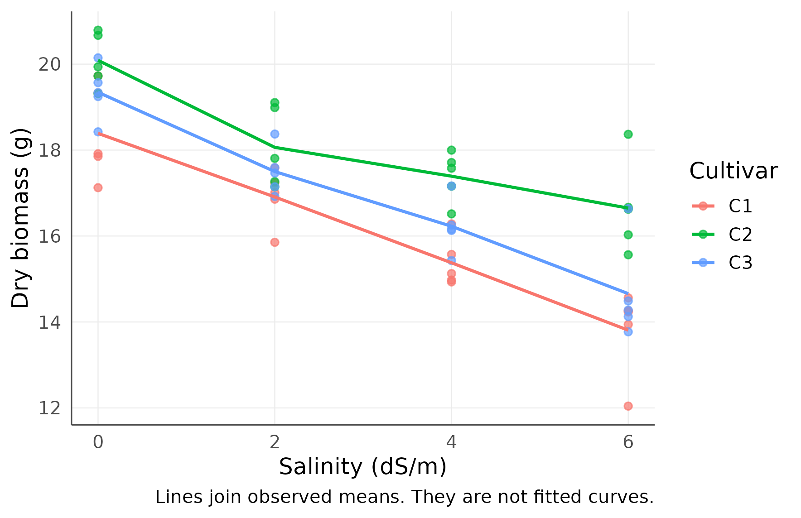
Observed biomass. Every point is one plot. Nothing has been modelled yet.
Two features are visible and both matter later: the decline is not a straight line, and the cultivars do not decline in parallel.
5. Start with the randomization, not the test
5.1 The declaration
des <- agri_design(
biomass ~ cultivar * salinity_f,
data = base,
design = "rcbd",
block = block
)
des
#> agriRank experimental design
#> Design: rcbd
#> Response: biomass
#> Factors: cultivar * salinity_f
#> Block: block
#> Rows: 60The declaration is not bookkeeping. It is a statement about how the experiment was carried out, and it decides what may legitimately follow.
design_summary(des)
#> $design
#> [1] "rcbd"
#>
#> $responses
#> [1] "biomass"
#>
#> $treatments
#> [1] "cultivar" "salinity_f"
#>
#> $blocks
#> [1] "block"
#>
#> $subjects
#> NULL
#>
#> $within
#> NULL
#>
#> $whole_plot
#> NULL
#>
#> $subplot
#> NULL
#>
#> $subsubplot
#> NULL
#>
#> $strip_a
#> NULL
#>
#> $strip_b
#> NULL
#>
#> $environment
#> NULL
#>
#> $n_rows
#> [1] 60
#>
#> $n_treatment_cells_observed
#> [1] 12
#>
#> $missing_response
#> biomass
#> 0
#>
#> $randomization
#> [1] "Treatment combinations are randomized within blocks; block labels are not exchangeable with treatments."
#>
#> $validation
#> $ok
#> [1] TRUE
#>
#> $problems
#> [1] severity code message
#> <0 rows> (or 0-length row.names)
#>
#> attr(,"class")
#> [1] "agri_validation"5.2 Validate it
validate_agri_design(des)
#> $ok
#> [1] TRUE
#>
#> $problems
#> [1] severity code message
#> <0 rows> (or 0-length row.names)
#>
#> attr(,"class")
#> [1] "agri_validation"A design audit answers questions that no model-selection criterion can repair afterwards:
- Are all intended treatment combinations represented?
- Which factor was randomized to which unit?
- Which observations share an experimental unit?
- Is a repeated measurement being counted as an independent replicate?
- Are there empty cells?
- Does the declared structure match the randomization that actually happened?
If any of those answers is uncertain, the next step is not analysis. It is clarification of the design.
5.3 What the declaration then forbids
This is where agriRank differs from a toolbox of tests.
Once a block is declared, methods that cannot carry it are refused
by name, rather than applied to the data with the block
quietly dropped:
agri_rank(des, method = "kruskal")
#> Error:
#> ! Method `kruskal` is not allowed when a block is declared because this adapter would analyze observations as independent and discard the randomization structure. Use a block-aware engine such as Friedman (one-way complete RCBD), ART, or permuco as appropriate.The refusal is the point. A Kruskal-Wallis test on blocked data does not fail loudly on its own; it simply answers a different question, about a completely randomized experiment that was not the one performed. Discarding the block inflates the residual variation with between-block differences that the design was built to remove.
5.4 The same rule in the other direction
An analysis may also be refused because the declaration is missing information the method needs:
np_repeated(biomass ~ cultivar, base)
#> Error:
#> ! `np_repeated()` requires `subject=`: repeated measurements are not exchangeable across subjects.Repeated measurements on one plant are not exchangeable with measurements on different plants, so the subject has to be declared. The message names the missing argument and the scientific reason for it.
5.5 Interpretation
The design declaration has three consequences that persist through the rest of the analysis:
- it fixes the stratum in which every subsequent comparison is made;
- it determines which engines are admissible, and which will be refused;
- it becomes part of the reported methods, so a reader can reconstruct what was assumed.
Nothing later in this vignette overrides it.
6. Rank-based inference for the declared design
6.1 Fit
fit <- agri_rank(des)
#> Registered S3 method overwritten by 'lme4':
#> method from
#> na.action.merMod car
fit
#> agriRank fit
#> Design: rcbd
#> Method: Aligned Rank Transform
#> Response: biomass
#> Term F Df Df.res Pr(>F) effect
#> 1 cultivar 38.649209 2 44 2.047132e-10 cultivar
#> 2 salinity_f 83.755809 3 44 3.226862e-18 salinity_f
#> 3 cultivar:salinity_f 1.113167 6 44 3.702442e-01 cultivar:salinity_fThe engine was chosen from the structure of the design, not from the response. No p-value was consulted in making the choice, and none should be: an engine selected because it produced the smallest p-value is no longer testing the hypothesis it appears to test.
fit$omnibus
#> Term F Df Df.res Pr(>F) effect
#> 1 cultivar 38.649209 2 44 2.047132e-10 cultivar
#> 2 salinity_f 83.755809 3 44 3.226862e-18 salinity_f
#> 3 cultivar:salinity_f 1.113167 6 44 3.702442e-01 cultivar:salinity_f6.2 Reading the omnibus table
Three effects are reported and they answer three different questions:
| Effect | Question |
|---|---|
cultivar |
averaged over salinity, do cultivars differ? |
salinity_f |
averaged over cultivars, does salinity change biomass? |
cultivar:salinity_f |
does the salinity effect depend on the cultivar? |
The interaction is the one to read first. If it is present, the two main effects are averages over conditions in which the behaviour differs, and quoting them as if they described every cultivar is misleading.
anova(fit)
#> Term F Df Df.res Pr(>F) effect
#> 1 cultivar 38.649209 2 44 2.047132e-10 cultivar
#> 2 salinity_f 83.755809 3 44 3.226862e-18 salinity_f
#> 3 cultivar:salinity_f 1.113167 6 44 3.702442e-01 cultivar:salinity_f6.3 A result worth pausing on
The two main effects are overwhelming. The interaction is not detected.
That deserves attention, because the raw figure of section 4.3 looked as though the cultivars declined at different rates, and the data were in fact generated with a real interaction: C2 was given a genuine advantage that grows with salinity.
So the experiment contains an effect that it cannot resolve. Five blocks are not enough to separate an interaction of that size from noise. Nothing is wrong with the analysis; the design simply lacks the power.
This is the single most useful thing a worked example can demonstrate, and it is why section 35 of this vignette exists. A non-significant interaction is not a parallel response. It is a statement that the experiment could not distinguish one from the other.
6.4 What follows from a non-detected interaction
Two readings are defensible and they should be reported together:
- Marginally. With no evidence of an interaction, cultivar effects may be quoted averaged over salinity, and salinity effects averaged over cultivars. This is the simpler report and it is what most manuscripts would present.
- With the caveat. The absence of evidence is not evidence of parallelism, and the confidence intervals of Part III will show that an agronomically meaningful interaction remains compatible with these data.
The gradient analysis of Part IV pursues the second reading further, because a curve estimated per cultivar can show a difference in shape that a factorial interaction test, spending six degrees of freedom, cannot detect.
6.5 What an omnibus test does not tell you
An omnibus test answers one question: whether the treatment labels carry any information at all about the ranks. It does not say which treatments differ, in what direction, or by how much. Those are separate questions with separate multiplicity problems, and they are the subject of Part III.
A significant omnibus test is a licence to look further. It is not itself a finding worth reporting alone.
7. Effects on a scale that ranks support
7.1 Cell summaries and mean ranks
eff <- agri_effects(fit)
eff
#> cell n median mean_rank
#> 1 C1::0 5 17.91560 44.2
#> 2 C1::2 5 17.00924 28.4
#> 3 C1::4 5 15.12592 13.8
#> 4 C1::6 5 14.23396 4.8
#> 5 C2::0 5 19.93798 56.6
#> 6 C2::2 5 17.80665 40.8
#> 7 C2::4 5 17.57829 35.0
#> 8 C2::6 5 16.62329 24.8
#> 9 C3::0 5 19.33881 52.4
#> 10 C3::2 5 17.46599 35.6
#> 11 C3::4 5 16.15833 20.6
#> 12 C3::6 5 14.27567 9.0Two quantities are reported per treatment cell, and the choice is deliberate.
median is a location on the response
scale, in grams. It is the quantity a reader wants for
agronomic magnitude, and it is the robust counterpart of a treatment
mean: one extreme plot moves it very little.
mean_rank is the quantity the analysis actually
used. The omnibus test of section 6 and the comparisons of Part
III both operate on within-block ranks and never look at the grams
again. Reporting the mean rank beside the median lets a reader see the
analysis, not merely its conclusion.
7.2 Why not a treatment mean
A rank-based analysis does not estimate a treatment mean, and printing one beside a rank test is a category error that appears constantly in the applied literature. The two objects answer different questions and can order the treatments differently.
| Property | Treatment mean | Median and mean rank |
|---|---|---|
| Requires a scale with equal intervals | yes | no |
| Affected by a single extreme plot | strongly | weakly |
| Defined for ordinal data | no | yes |
| Invariant to monotone transformation of the response | no | yes for the rank |
| Matches what the test computed | no | yes |
The last row is the one that matters for a manuscript. If the test ranked and the table means, a reader cannot check the one against the other.
7.3 Reading the cell table
e <- as.data.frame(eff)
e$cultivar <- sub("::.*$", "", e$cell)
e$salinity <- as.numeric(sub("^.*::", "", e$cell))
with(e, tapply(median, list(cultivar, salinity), identity))
#> 0 2 4 6
#> C1 17.91560 17.00924 15.12592 14.23396
#> C2 19.93798 17.80665 17.57829 16.62329
#> C3 19.33881 17.46599 16.15833 14.27567Laid out as a grid, the decline with salinity is visible in every cultivar, and C2 sits above the others at every level. Whether the gap widens with salinity is exactly the interaction the design could not resolve.
7.4 An estimate travels with its interval
# The helper exists so that an estimate and its interval reach a manuscript
# table together, whatever produced them.
agri_format_ci(estimate = 17.9, lower = 16.4, upper = 19.3, digits = 2)
#> [1] "18 (16; 19)"Every estimate this package reports carries an interval where one is
defined, and agri_format_ci() formats the pair as a single
reportable string. An estimate quoted without its uncertainty is not a
result.
8. Pairwise comparisons and compact letters
8.1 Design-aware Conover comparisons
cmp <- agri_conover(fit)
head(as.data.frame(cmp), 8)
#> stratum group1 group2 paired_by_block statistic p_value p_adjusted
#> 1 all C1::2 C1::0 TRUE 3.181519 2.686304e-03 6.984391e-02
#> 2 all C1::4 C1::0 TRUE 6.817542 2.117270e-08 1.079808e-06
#> 3 all C1::4 C1::2 TRUE 3.636022 7.218295e-04 2.237672e-02
#> 4 all C1::6 C1::0 TRUE 8.862804 2.411615e-11 1.446969e-09
#> 5 all C1::6 C1::2 TRUE 5.681285 9.902162e-07 4.654016e-05
#> 6 all C1::6 C1::4 TRUE 2.045262 4.683749e-02 7.493998e-01
#> 7 all C2::0 C1::0 TRUE -2.954268 5.017100e-03 1.204104e-01
#> 8 all C2::0 C1::2 TRUE -6.135787 2.131004e-07 1.022882e-05
#> method
#> 1 Conover all-pairs after Friedman-type ranking
#> 2 Conover all-pairs after Friedman-type ranking
#> 3 Conover all-pairs after Friedman-type ranking
#> 4 Conover all-pairs after Friedman-type ranking
#> 5 Conover all-pairs after Friedman-type ranking
#> 6 Conover all-pairs after Friedman-type ranking
#> 7 Conover all-pairs after Friedman-type ranking
#> 8 Conover all-pairs after Friedman-type rankingThe Conover procedure operates on the same within-block ranks that the omnibus test used. That continuity matters: a post-hoc procedure computed on a different quantity from the omnibus test can contradict it, and the reader has no way to tell which to believe.
8.2 Compact letter displays, computed inside the stratum
cld <- agri_cld(cmp)
cld
#> group letter
#> 1 C1::2 abc
#> 2 C1::4 def
#> 3 C1::6 d
#> 4 C2::0 g
#> 5 C2::2 ag
#> 6 C2::4 ab
#> 7 C2::6 bce
#> 8 C3::0 g
#> 9 C3::2 ab
#> 10 C3::4 cef
#> 11 C3::6 df
#> 12 C1::0 agA compact letter display is the most-read and least-understood object in agronomic papers. Two rules govern it here.
First, letters are computed within strata. In a
factorial with an interaction, a display that pools across the other
factor is not interpretable, because two treatments may share a letter
at one salinity and not at another. agri_cld() computes the
display inside the stratum in which the comparisons were made.
Second, an incomplete family of comparisons is refused. If some pairs are missing, the letters cannot be constructed consistently, and a partial display invites exactly the wrong reading. The function says so instead of producing something plausible-looking.
8.3 What sharing a letter does and does not mean
Sharing a letter means the comparison did not reach the chosen significance level. It does not mean the treatments are equal. With five blocks, the experiment has limited power, and a real difference of agronomic size can easily share a letter with zero.
The honest report pairs the letters with the effect sizes of section 7. Letters alone answer “was it detected”; effects answer “how large”, which is the question that matters agronomically.
8.4 Planned contrasts, and an honest limitation
Comparing every pair is rarely what the science asks. A planned contrast asks one specific question and pays a much smaller multiplicity price. The coefficients sum to zero, which is what makes it a contrast rather than a weighted average, and declaring it before looking at the data is what preserves its interpretation. A contrast chosen after seeing which cells are far apart is a pairwise comparison in disguise, with the multiplicity hidden.
C <- rbind("C2 vs the other two" = c(-0.5, 1, -0.5))
agri_contrast(fit, C)
#> Error:
#> ! General user-defined contrasts are currently implemented for the native repeated wild-rank engine. Use the backend object for other engines.The refusal is worth reading carefully, because it is a limitation of this version rather than a statement about the data. General user-defined contrasts are currently implemented only for the native repeated wild-rank engine. For every other engine the message says so and points to the backend object, instead of silently computing a contrast on a quantity for which it has not been validated.
Where a planned contrast is essential and the engine does not support it, the defensible route is the pairwise machinery of section 8.1 with an appropriate multiplicity adjustment, accepting the loss of power that comparing more pairs entails.
8.5 Interpretation
The layers answer different questions and should be reported together:
| Layer | Question | Function |
|---|---|---|
| Omnibus | is there anything here | agri_rank() |
| Effects | how large, on the response scale and on the rank scale | agri_effects() |
| Comparisons | which pairs, with multiplicity controlled |
agri_conover(), agri_cld()
|
| Contrast | the one question the study was designed to answer |
agri_contrast(), where supported |
9. Should salinity be a factor or a curve?
9.1 The decision is about the treatment, not about the fit
Salinity was applied at 0, 2, 4 and 6 dS/m. Those are levels of a quantitative treatment, and they can be analysed two ways:
| As a factor | As a gradient |
|---|---|
| makes no assumption about the shape between levels | assumes the response varies smoothly between levels |
| answers: do these four levels differ | answers: what is the shape, and where is it changing |
| cannot interpolate | can interpolate, within the tested range |
| spends 3 degrees of freedom | spends fewer, and gains precision if the shape is real |
The decision should be made on scientific grounds. If the four levels were chosen as representative points on a continuum, and interpolation between them is meaningful, the gradient analysis answers the real question. If they are distinct managements that happen to be labelled with numbers, they are a factor.
Salinity is a continuum. It is analysed as a gradient from here on, with the factorial analysis of Part II retained as the design-faithful companion.
9.2 Both analyses, side by side
data.frame(
analysis = c("factor", "gradient"),
question = c("do the four levels differ",
"what shape does biomass follow, and where does it change"),
reported_in = c("Part II", "Parts IV to VI")
)
#> analysis question
#> 1 factor do the four levels differ
#> 2 gradient what shape does biomass follow, and where does it change
#> reported_in
#> 1 Part II
#> 2 Parts IV to VIReporting both is not indecision. They answer different questions, and a manuscript that reports only the factorial analysis of a quantitative treatment has left the shape of the response undescribed.
10. Fitting the gradient
10.1 A first fit
npfit <- agri_np_regression(biomass ~ salinity, base, method = "gam",
block = block)
npfit
#> agriRank nonparametric regression
#> Method: gam
#> Response: biomass
#> Predictors: salinity
#> Block adjustment: blockThe block is retained as an adjustment term. An engine that cannot carry it is refused, exactly as in Part I:
agri_np_regression(biomass ~ salinity, base, method = "loess", block = block)
#> Error:
#> ! Method `loess` does not adjust for the declared block in agriRank. Use kernel, quantile, GAM or SCAM, or omit block only when scientifically justified.10.2 Comparing engines without p-value shopping
cmp_eng <- agri_np_compare(
biomass ~ salinity, base,
methods = c("gam", "kernel", "quantile"),
block = block, kfold = 5, seed = 1
)
#> Warning in rq.fit.br(x, y, tau = tau, ...): Solution may be nonunique
#> Warning in rq.fit.br(x, y, tau = tau, ...): Solution may be nonunique
#> Warning in rq.fit.br(x, y, tau = tau, ...): Solution may be nonunique
#> Warning in rq.fit.br(x, y, tau = tau, ...): Solution may be nonunique
cmp_eng
#> method n RMSE MAE MedAE bias Spearman
#> 1 kernel 60 1.194009 0.9657749 0.8409606 0.006391614 0.7494928
#> 2 quantile 60 1.202536 0.9424161 0.7556347 0.195248748 0.7937196
#> 3 gam 60 1.251441 1.0110466 0.9423772 0.023063802 0.7676147
#> selected_metric failures
#> 1 1.194009 0
#> 2 1.202536 0
#> 3 1.251441 0Note the failures column. An engine that cannot carry
the declared block is recorded as a failure rather than silently dropped
from the comparison, so the table cannot mislead by omission.
Read this table as predictive comparison, not as model selection for inference. Cross-validated error says which engine predicts a held-out plot best. It does not say which engine gives the correct p-value, and choosing the engine that produced the most convenient p-value is the single most common way to invalidate a nonparametric analysis.
The package therefore separates the two operations deliberately:
agri_np_compare() reports predictive error, and nothing in
it feeds back into the choice of an inferential engine.
10.3 The fitted curve
agri_np_plot(npfit, points = TRUE)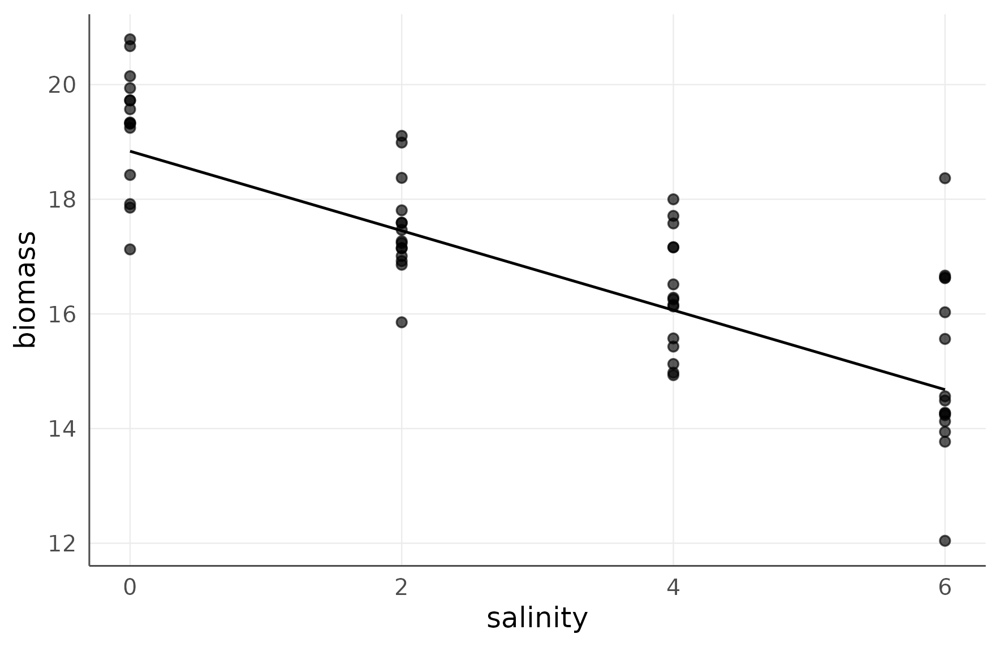
Fitted salinity response with observed plots. The band is the analytic interval for the curve, not for a plot.
10.4 Explained variation, and what each index answers
agri_np_diagnostics(npfit, cv = TRUE, seed = 1)$r2
#> pseudo_r2 cv_r2 spearman_r2 effective_df n
#> 1 0.6791348 0.5723812 0.6748208 1.000217 60Three indices are reported side by side because they answer three questions and routinely disagree:
| Index | Question | Fails to notice |
|---|---|---|
pseudo_r2 |
how much variation does the fitted curve reproduce | overfitting: it always rises with flexibility |
cv_r2 |
how much would it reproduce on a plot it has not seen | nothing, but it is noisy in small experiments |
spearman_r2 |
how much of the ordering does it get right | the size of the departures |
A flexible engine typically shows a larger pseudo_r2, a
larger effective_df and a smaller
cv_r2 than a rigid one on the same data. That pattern is
the signature of a curve that is following noise, and it is visible only
because the three are reported together.
11. Where is the response still changing?
11.1 The trap of the fitted extreme
agri_np_optimum(npfit, objective = "min")
#> predictor optimum fitted_response objective at_boundary support
#> 1 salinity 6 14.67896 min TRUE continuousThat is a number with no uncertainty attached, and it may well sit on the edge of the tested range. An extremum has to land somewhere; if the response does not turn over inside the range, it lands on a boundary, and reading the boundary as a recommendation is an artefact of the fitting, not a finding about the crop.
11.2 The experiment decides which analysis is available
The natural next step is a SiZer map, which classifies the derivative of the fitted curve across a whole column of bandwidths. On this experiment it is refused:
agri_np_sizer(npfit)
#> Error:
#> ! A SiZer map needs at least five distinct predictor values.Salinity was applied at four levels. A map of the derivative across bandwidths needs more positions than that, because with four points every bandwidth sees essentially the same three gaps and the column carries no information about robustness to smoothing.
This is a design limitation, not a software one, and no analytical choice repairs it. A four-level design supports the factorial comparison of Part III and a fitted curve for description. It does not support a claim about where the response stops changing.
The lesson is worth stating in its general form: if a recommendation curve is the objective, the experiment has to be designed for it. Six to eight levels with adequate replication is the usual minimum, and that decision is made before the field is laid out, not after the data arrive.
11.3 A companion experiment that was designed for a gradient
The package ships a nitrogen response with eight rates in five complete blocks, which is what the rest of Part V requires.
data(agri_dose)
c(levels = length(unique(agri_dose$dose)), blocks = nlevels(agri_dose$block),
plots = nrow(agri_dose))
#> levels blocks plots
#> 8 5 40
gfit <- agri_np_regression(yield ~ dose, agri_dose, method = "gam",
block = block)
agri_np_optimum(gfit)
#> predictor optimum fitted_response objective at_boundary support
#> 1 dose 280 5.035595 max TRUE continuousThe fitted maximum sits at the top of the tested range and
at_boundary says so. That is the trap of section 11.1 in
its commonest form: this response plateaus, and a maximum has to land
somewhere.
11.4 An answer that survives the smoothing choice
sz <- agri_np_sizer(gfit)
sz
#> agriRank SiZer map
#> Predictor: dose Response: yield n = 40
#> Derivative order: 1
#> Bandwidths: 21 from 11.2 to 140
#> Reference bandwidth: 39.6
#>
#> Slope classification at the reference bandwidth:
#> from to state n_grid bandwidth
#> 0 182 increasing 27 39.6
#> 189 280 flat 14 39.6
#>
#> A conclusion that holds across the whole bandwidth column is robust to
#> the amount of smoothing; one that appears at a single bandwidth is not.
plot(sz, type = "map")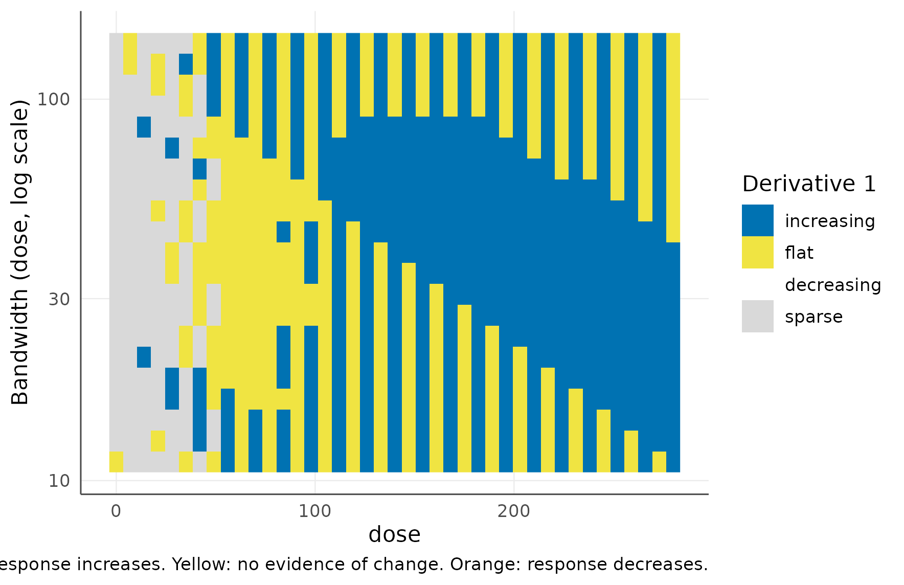
SiZer map. Rows are amounts of smoothing, columns positions on the nitrogen axis. Read it vertically: a position classified the same way in every row does not depend on the smoothing choice.
agri_np_significant_slope(sz, stability = 0.8)
#> predictor stability increase_from increase_to stops_increasing_at
#> 1 dose 0.8 0 119 126
#> decrease_from decrease_to
#> 1 NA NAThis is the sentence a manuscript can carry: the interval over which yield is still rising, at a stated level of agreement across bandwidths. It is a different and far more defensible claim than the boundary maximum of section 11.3.
12. The location of an optimum, and its interval
12.1 A recommended level is a location
agri_np_bootstrap() resamples the
height of the curve.
agri_np_optimum_test() resamples its
position. Those are different and unequally hard
quantities: a curve can be estimated precisely while the position of its
extreme wanders widely from one resampled experiment to the next, and a
response that flattens is exactly the shape that makes it wander.
ot <- agri_np_optimum_test(gfit, B = 199, seed = 1, n = 120, external = FALSE)
#> Warning: B < 999 is a speed device for examples and vignettes; final inference
#> needs B >= 999. Silence this note with options(agriRank.quiet_small_B = TRUE).
ot
#> Location of the maximum of yield over dose
#> Resampling unit: whole levels of `block` B = 199 level = 0.95
#>
#> level n optimum lower upper fitted_response p_boundary replicates identified
#> all 40 280 280 280 5.036 1 120 FALSE
#>
#> Only 60% of replicates were usable. Resampling whole blocks
#> sometimes omits one, and a refit that never saw a block cannot predict for
#> it. Raise B to keep the same effective number of replicates.
#>
#> At least one optimum sits on the edge of the tested range in most
#> replicates, so it is not identified by these data. Report the range
#> over which the response still changes, from agri_np_significant_slope(),
#> rather than a rate.Three columns carry the result.
optimum is the point estimate. lower and
upper bound its location, not its height.
p_boundary is the share of resampled experiments whose
extreme landed on an end of the searched range, and
identified turns FALSE when that share reaches
one half.
plot(ot, type = "distribution")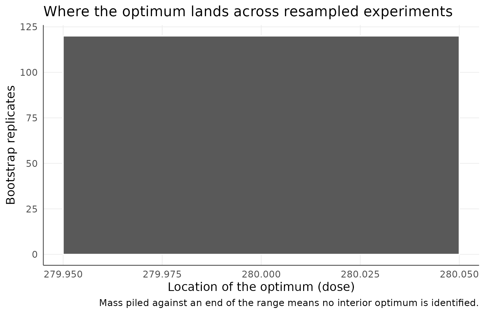
Where the extreme lands across resampled experiments. Mass piled against one end of the range is the visual form of an unidentified optimum.
12.2 The resampling respects the blocks
Note the header line of the printed object: the resampling unit is the declared block, not the individual plot. Whole blocks are resampled together, because plots within a block are not exchangeable with plots in other blocks. That is what declaring a block asserts, and the bootstrap honours it.
B = 199 keeps this vignette fast. Use
B >= 999 for anything reported.
12.3 Comparing the response of two cultivars
Part II could not resolve the interaction. A curve fitted per cultivar is a second, more economical way to ask the same question, and to ask it the model must allow the curve shapes to differ, not merely their heights.
fit_add <- agri_np_regression(biomass ~ salinity + cultivar, base,
method = "gam", block = block)
agri_np_optimum_test(fit_add, by = cultivar, B = 49, objective = "min",
external = FALSE)
#> Error:
#> ! The fitted curves for the levels of `cultivar` are parallel, because `cultivar` enters the model as an additive adjustment. Their optima are therefore identical by construction and comparing them would describe the model, not the experiment. Refit allowing the shape to differ, with `gam_structure = "varying"`, which fits one smooth of salinity per level of cultivar.The refusal is arithmetic, not statistical. An additive adjustment shifts one curve above the other without changing its shape, so parallel curves have their extremes at the same place by construction. A comparison would report a difference of exactly zero and a p-value of one, describing the model rather than the experiment.
fit_var <- agri_np_regression(biomass ~ salinity + cultivar, base,
method = "gam", block = block,
gam_structure = "varying")
fit_var$formula_used
#> biomass ~ cultivar + s(salinity, by = cultivar, k = 3) + block
#> <environment: 0x55c480ccb998>One smooth of salinity is now fitted per cultivar:
ot2 <- agri_np_optimum_test(fit_var, by = cultivar, objective = "min",
B = 199, seed = 1, n = 120, external = FALSE)
ot2$optimum
#> level n optimum lower upper fitted_response p_boundary replicates
#> 1 C1 20 6 6.000000 6 13.55428 1.00 120
#> 2 C2 20 6 4.032353 6 16.35693 0.85 120
#> 3 C3 20 6 6.000000 6 14.35754 1.00 120
#> identified
#> 1 FALSE
#> 2 FALSE
#> 3 FALSE
plot(ot2, type = "curve")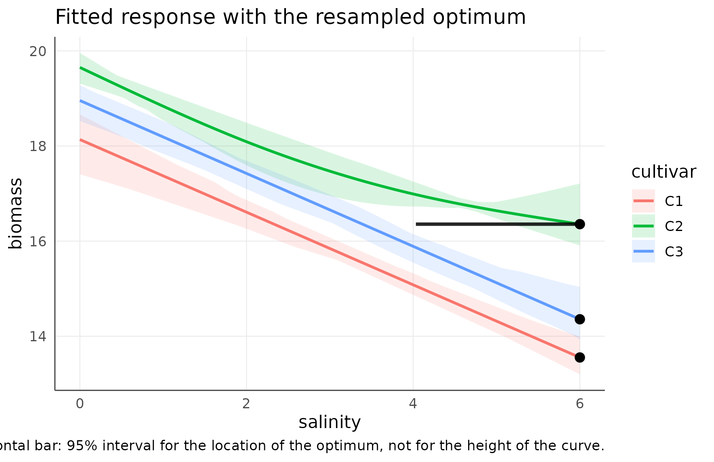
Fitted response per cultivar with the resampled interval for the location of the extreme. The horizontal bar is uncertainty along the salinity axis, not along the biomass axis.
13. The typical plot and the poor plot
13.1 Why a mean curve is not enough
Every curve so far describes a central tendency. That is a strong restriction on the agronomic question it can answer.
A cultivar can hold up well in good plots and collapse in poor ones. The average response then looks acceptable, and a recommendation built on it will disappoint exactly the growers whose fields resemble the poor plots. Conditional quantiles ask the question directly: the median describes the typical plot, the tenth percentile is the exposure curve, what a grower meets in a bad year.
q10 <- agri_np_regression(biomass ~ salinity, base,
method = "smooth_quantile", tau = 0.10, block = block)
q50 <- agri_np_regression(biomass ~ salinity, base,
method = "smooth_quantile", tau = 0.50, block = block)
nd <- data.frame(salinity = c(0, 2, 4, 6),
block = factor("3", levels = levels(base$block)))
data.frame(
salinity = nd$salinity,
q10 = round(as.numeric(agri_np_predict(q10, nd)), 2),
q50 = round(as.numeric(agri_np_predict(q50, nd)), 2),
gap = round(as.numeric(agri_np_predict(q50, nd)) -
as.numeric(agri_np_predict(q10, nd)), 2)
)
#> salinity q10 q50 gap
#> 1 0 18.14 19.22 1.08
#> 2 2 16.71 17.77 1.06
#> 3 4 15.28 16.32 1.04
#> 4 6 13.85 14.88 1.03Each curve is fitted by the pinball loss, which defines the quantile directly. Nothing is assumed about the shape of the response distribution, only about the smoothness of each curve.
13.2 The fan, and the replication it needs
A tail quantile needs observations in that tail. Sixty plots is thin for a tenth percentile, and the function says so rather than fitting one from three values.
qc <- suppressWarnings(
agri_np_quantile_curves(biomass ~ salinity, base, block = block,
quantiles = c(0.25, 0.5, 0.75), n = 50))
qc$summary
#> quantile fitted_min fitted_max range coverage deviation tracking
#> 1 0.25 13.70622 18.18141 4.475191 0.1666667 -0.08333333 TRUE
#> 2 0.50 14.53531 18.87475 4.339440 0.5500000 0.05000000 TRUE
#> 3 0.75 15.68427 19.65917 3.974902 0.7333333 -0.01666667 TRUERead deviation before anything else. It is the gap
between the share of plots falling below each fitted curve and the
quantile that curve claims to be, measured on the very data it was
fitted to. A quantile that misses its own target here is not a tail this
experiment can resolve, and tracking flags it.
plot(qc, type = "fan")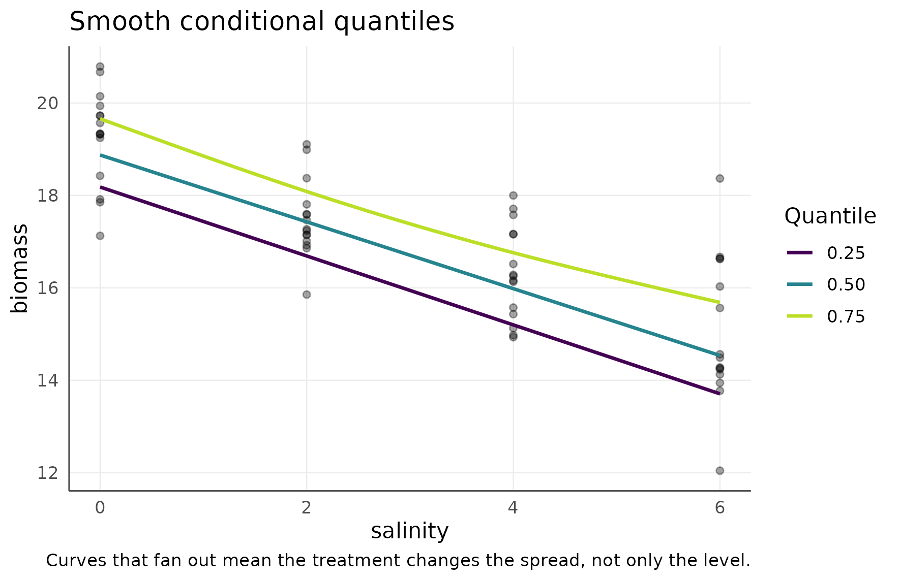
Smooth conditional quantiles. Curves that fan out mean the treatment changes the spread of biomass, not only its level.
plot(qc, type = "spread")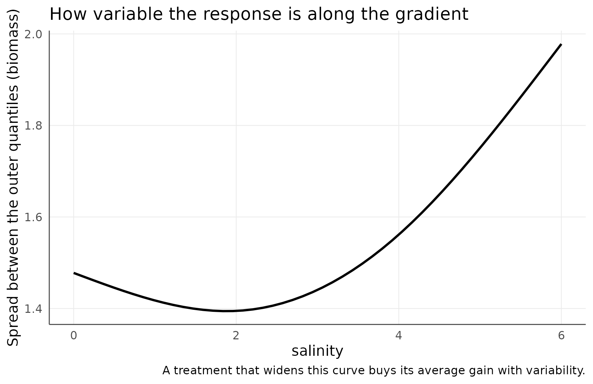
Distance between the outer quantiles along the gradient.
14. Three kinds of interval, and which to quote
14.1 They answer different questions
| Tool | What the interval covers | What it rests on |
|---|---|---|
agri_np_predict(interval = "confidence") |
the fitted curve | the asymptotic theory of that engine |
agri_np_bootstrap() |
the fitted curve | the legitimacy of resampling experimental units |
agri_np_conformal() |
a future plot | exchangeability alone, in finite samples |
The first two describe how well the average response is known. Only the third describes where an individual plot will fall, which is what a grower is asking when a level is recommended.
nd2 <- data.frame(salinity = c(0, 3, 6),
block = factor("3", levels = levels(base$block)))
an <- as.data.frame(agri_np_predict(npfit, nd2, interval = "confidence"))
bo <- as.data.frame(agri_np_bootstrap(npfit, newdata = nd2, B = 199, seed = 2))
#> Warning in predict.gam(eng, newdata = newdata, type = "response"): factor
#> levels 3 not in original fit
#> Warning in predict.gam(eng, newdata = newdata, type = "response"): factor
#> levels 3 not in original fit
#> Warning in predict.gam(eng, newdata = newdata, type = "response"): factor
#> levels 3 not in original fit
#> Warning in predict.gam(eng, newdata = newdata, type = "response"): factor
#> levels 3 not in original fit
#> Warning in predict.gam(eng, newdata = newdata, type = "response"): factor
#> levels 3 not in original fit
#> Warning in predict.gam(eng, newdata = newdata, type = "response"): factor
#> levels 3 not in original fit
#> Warning in predict.gam(eng, newdata = newdata, type = "response"): factor
#> levels 3 not in original fit
#> Warning in predict.gam(eng, newdata = newdata, type = "response"): factor
#> levels 3 not in original fit
#> Warning in predict.gam(eng, newdata = newdata, type = "response"): factor
#> levels 3 not in original fit
#> Warning in predict.gam(eng, newdata = newdata, type = "response"): factor
#> levels 3 not in original fit
#> Warning in predict.gam(eng, newdata = newdata, type = "response"): factor
#> levels 3 not in original fit
#> Warning in predict.gam(eng, newdata = newdata, type = "response"): factor
#> levels 3 not in original fit
#> Warning in predict.gam(eng, newdata = newdata, type = "response"): factor
#> levels 3 not in original fit
#> Warning in predict.gam(eng, newdata = newdata, type = "response"): factor
#> levels 3 not in original fit
#> Warning in predict.gam(eng, newdata = newdata, type = "response"): factor
#> levels 3 not in original fit
#> Warning in predict.gam(eng, newdata = newdata, type = "response"): factor
#> levels 3 not in original fit
#> Warning in predict.gam(eng, newdata = newdata, type = "response"): factor
#> levels 3 not in original fit
#> Warning in predict.gam(eng, newdata = newdata, type = "response"): factor
#> levels 3 not in original fit
#> Warning in predict.gam(eng, newdata = newdata, type = "response"): factor
#> levels 3 not in original fit
#> Warning in predict.gam(eng, newdata = newdata, type = "response"): factor
#> levels 3 not in original fit
#> Warning in predict.gam(eng, newdata = newdata, type = "response"): factor
#> levels 3 not in original fit
#> Warning in predict.gam(eng, newdata = newdata, type = "response"): factor
#> levels 3 not in original fit
#> Warning in predict.gam(eng, newdata = newdata, type = "response"): factor
#> levels 3 not in original fit
#> Warning in predict.gam(eng, newdata = newdata, type = "response"): factor
#> levels 3 not in original fit
#> Warning in predict.gam(eng, newdata = newdata, type = "response"): factor
#> levels 3 not in original fit
#> Warning in predict.gam(eng, newdata = newdata, type = "response"): factor
#> levels 3 not in original fit
#> Warning in predict.gam(eng, newdata = newdata, type = "response"): factor
#> levels 3 not in original fit
#> Warning in predict.gam(eng, newdata = newdata, type = "response"): factor
#> levels 3 not in original fit
#> Warning in predict.gam(eng, newdata = newdata, type = "response"): factor
#> levels 3 not in original fit
#> Warning in predict.gam(eng, newdata = newdata, type = "response"): factor
#> levels 3 not in original fit
#> Warning in predict.gam(eng, newdata = newdata, type = "response"): factor
#> levels 3 not in original fit
#> Warning in predict.gam(eng, newdata = newdata, type = "response"): factor
#> levels 3 not in original fit
#> Warning in predict.gam(eng, newdata = newdata, type = "response"): factor
#> levels 3 not in original fit
#> Warning in predict.gam(eng, newdata = newdata, type = "response"): factor
#> levels 3 not in original fit
#> Warning in predict.gam(eng, newdata = newdata, type = "response"): factor
#> levels 3 not in original fit
#> Warning in predict.gam(eng, newdata = newdata, type = "response"): factor
#> levels 3 not in original fit
#> Warning in predict.gam(eng, newdata = newdata, type = "response"): factor
#> levels 3 not in original fit
#> Warning in predict.gam(eng, newdata = newdata, type = "response"): factor
#> levels 3 not in original fit
#> Warning in predict.gam(eng, newdata = newdata, type = "response"): factor
#> levels 3 not in original fit
#> Warning in predict.gam(eng, newdata = newdata, type = "response"): factor
#> levels 3 not in original fit
#> Warning in predict.gam(eng, newdata = newdata, type = "response"): factor
#> levels 3 not in original fit
#> Warning in predict.gam(eng, newdata = newdata, type = "response"): factor
#> levels 3 not in original fit
#> Warning in predict.gam(eng, newdata = newdata, type = "response"): factor
#> levels 3 not in original fit
#> Warning in predict.gam(eng, newdata = newdata, type = "response"): factor
#> levels 3 not in original fit
#> Warning in predict.gam(eng, newdata = newdata, type = "response"): factor
#> levels 3 not in original fit
#> Warning in predict.gam(eng, newdata = newdata, type = "response"): factor
#> levels 3 not in original fit
#> Warning in predict.gam(eng, newdata = newdata, type = "response"): factor
#> levels 3 not in original fit
#> Warning in predict.gam(eng, newdata = newdata, type = "response"): factor
#> levels 3 not in original fit
#> Warning in predict.gam(eng, newdata = newdata, type = "response"): factor
#> levels 3 not in original fit
#> Warning in predict.gam(eng, newdata = newdata, type = "response"): factor
#> levels 3 not in original fit
#> Warning in predict.gam(eng, newdata = newdata, type = "response"): factor
#> levels 3 not in original fit
#> Warning in predict.gam(eng, newdata = newdata, type = "response"): factor
#> levels 3 not in original fit
#> Warning in predict.gam(eng, newdata = newdata, type = "response"): factor
#> levels 3 not in original fit
#> Warning in predict.gam(eng, newdata = newdata, type = "response"): factor
#> levels 3 not in original fit
#> Warning in predict.gam(eng, newdata = newdata, type = "response"): factor
#> levels 3 not in original fit
#> Warning in predict.gam(eng, newdata = newdata, type = "response"): factor
#> levels 3 not in original fit
#> Warning in predict.gam(eng, newdata = newdata, type = "response"): factor
#> levels 3 not in original fit
#> Warning in predict.gam(eng, newdata = newdata, type = "response"): factor
#> levels 3 not in original fit
#> Warning in predict.gam(eng, newdata = newdata, type = "response"): factor
#> levels 3 not in original fit
#> Warning in predict.gam(eng, newdata = newdata, type = "response"): factor
#> levels 3 not in original fit
#> Warning in predict.gam(eng, newdata = newdata, type = "response"): factor
#> levels 3 not in original fit
#> Warning in predict.gam(eng, newdata = newdata, type = "response"): factor
#> levels 3 not in original fit
#> Warning in predict.gam(eng, newdata = newdata, type = "response"): factor
#> levels 3 not in original fit
#> Warning in predict.gam(eng, newdata = newdata, type = "response"): factor
#> levels 3 not in original fit
#> Warning in predict.gam(eng, newdata = newdata, type = "response"): factor
#> levels 3 not in original fit
#> Warning in predict.gam(eng, newdata = newdata, type = "response"): factor
#> levels 3 not in original fit
#> Warning in predict.gam(eng, newdata = newdata, type = "response"): factor
#> levels 3 not in original fit
co <- as.data.frame(agri_np_conformal(npfit, newdata = nd2, level = 0.95,
seed = 1))
data.frame(
salinity = nd2$salinity,
analytic = round(an$upper - an$lower, 3),
bootstrap = round(bo$upper - bo$lower, 3),
conformal = round(co$upper - co$lower, 3)
)
#> salinity analytic bootstrap conformal
#> 1 0 1.508 0.835 8.629
#> 2 3 1.293 0.297 8.629
#> 3 6 1.508 0.549 8.629The conformal interval is several times wider, and correctly so. Quoting a confidence band for the curve as if it described a plot understates the risk a grower carries by a large factor. This is one of the commonest and most consequential misreadings in applied agronomy.
14.2 The guarantee, and where the design enters
Split conformal prediction refits the engine on part of the data, measures absolute residuals on the held-out part, and adds the appropriate empirical quantile of those residuals. With the finite-sample correction the resulting interval satisfies
in finite samples, for any engine and any response distribution.
The condition is exchangeability, and that is exactly where a declared design stops being decoration. Plots inside a block were randomized and are exchangeable. Plots in different blocks are not, because asserting that they differ is what declaring a block means.
cw <- agri_np_conformal(npfit, newdata = base, level = 0.90, seed = 1,
scope = "within_block")
cn <- agri_np_conformal(npfit, newdata = base, level = 0.90, seed = 1,
scope = "new_block")
data.frame(
question = c("a plot in a block we observed",
"a plot in a field we did not"),
mean_width = round(c(mean(cw$upper - cw$lower),
mean(cn$upper - cn$lower)), 3)
)
#> question mean_width
#> 1 a plot in a block we observed 5.418
#> 2 a plot in a field we did not 3.674Predicting into a new block is a stronger claim, so the interval is wider: it now carries between-block variation. It also requires dropping the block-specific term, because a block effect is not estimable in a block that was never observed.
14.3 Holding the method to its promise
cv <- agri_np_coverage(cw, data = base)
data.frame(target = cv$target, empirical = round(cv$empirical, 3),
mean_width = round(cv$mean_width, 3), n = cv$n)
#> target empirical mean_width n
#> 1 0.9 0.983 5.418 60
cv$by_block
#> block coverage n
#> 1 1 1.0000000 12
#> 2 2 1.0000000 12
#> 3 3 0.9166667 12
#> 4 4 1.0000000 12
#> 5 5 1.0000000 12Coverage measured on the fitting data is optimistic, since those rows helped build the interval. Its role here is teaching and diagnosis.
Note also that the guarantee is marginal, averaged over the gradient. It does not promise the stated coverage separately at every salinity.
14.4 The model-based route to a new field, and the assumption-free one
There are two ways to say something about a field that was never observed, and they rest on different things. They should be reported together.
f_shrunk <- agri_np_regression(biomass ~ salinity, base, method = "gam",
block = block, block_effect = "shrunk")
agri_np_block_effects(f_shrunk)
#> Block effects on biomass, block = `block`
#> Model was fitted with block_effect = "shrunk"
#>
#> block n raw fixed shrunk shrinkage
#> 1 12 -0.2758 -0.2758 -4.154e-05 0.9998
#> 2 12 -0.4172 -0.4172 -6.284e-05 0.9998
#> 3 12 0.2013 0.2013 3.032e-05 0.9998
#> 4 12 0.1602 0.1602 2.413e-05 0.9998
#> 5 12 0.3315 0.3315 4.993e-05 0.9998
#>
#> Mean shrinkage: 100%. Most of the apparent spread between blocks is treated as noise.
#>
#> Fixed effects exist only for the blocks that were observed. Shrunk
#> effects allow a prediction for a block that was not, at the price of a
#> working assumption about how blocks vary.A block that looks extreme is pulled back towards the common mean, because part of its apparent difference is noise. The amount of travel is the amount of between-block variation the data attribute to noise, and it is read off the table rather than assumed.
plot(agri_np_block_effects(f_shrunk))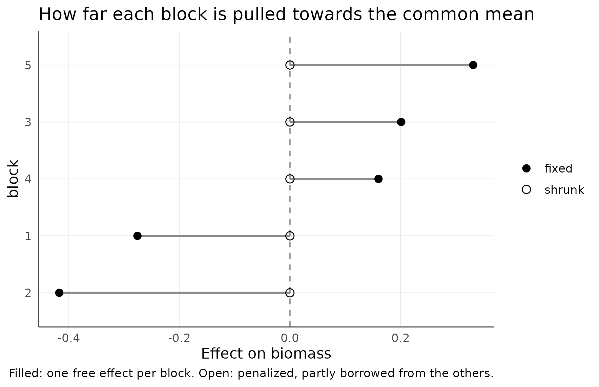
How far each block is pulled towards the common mean. Filled: one free effect per block. Open: penalized, partly borrowed from the other blocks.
The shrunk block term is the model-based route to a
new field, at the price of a working assumption about how blocks vary.
The conformal interval with scope = "new_block" is the
assumption-free route. When the two disagree, the
assumption is doing work the data do not support, and the wider of the
two is the one to quote.
15. Model checking without a distribution
15.1 Why not a normal QQ-plot
A normal QQ-plot asks whether residuals look Gaussian. For a package built to avoid assuming a distribution, that is the wrong question asked of the wrong quantity.
Simulation-based quantile residuals ask a better one: given the fitted model, where does each observation fall inside its own predictive distribution? Under a correct model those positions are uniform on the unit interval, whatever the response distribution is.
sd_fit <- agri_np_simdiag(npfit, nsim = 200, seed = 1)
sd_fit
#> agriRank simulation-based residual diagnostics
#> Engine: gam Simulator: agriRank simulation, DHARMa scaling
#> Simulations: 200 n = 60
#> Scaled residual quartiles: 0.00466 0.26479 0.47535 0.74622 0.99799
#> Expected under a correct model: 0.00 0.25 0.50 0.75 1.00
#>
#> check
#> uniformity
#> location along the gradient
#> dispersion along the gradient
#> question statistic
#> Are the scaled residuals uniform overall? 0.0464
#> Is the fitted mean systematically off in some part of the range? 1.0603
#> Does the spread change along the gradient? 5.2024
#> p_value
#> 0.9988
#> 0.7867
#> 0.1576
#>
#> Descriptive. The overall uniformity check has little power against a mean
#> that is wrong in a systematic way; the location check along the gradient is
#> the one that detects it. Neither is a rule for choosing an inferential test.
plot(sd_fit, type = "uniform_qq")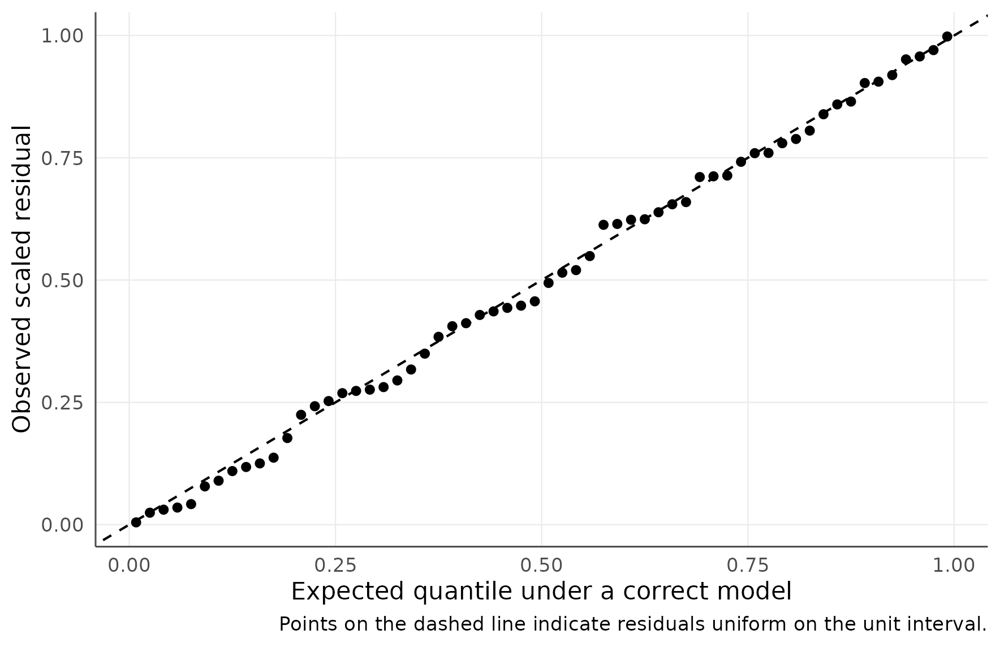
Left question: are the scaled residuals uniform? Right question: is the fit equally good along the whole gradient?
plot(sd_fit, type = "residual_predictor")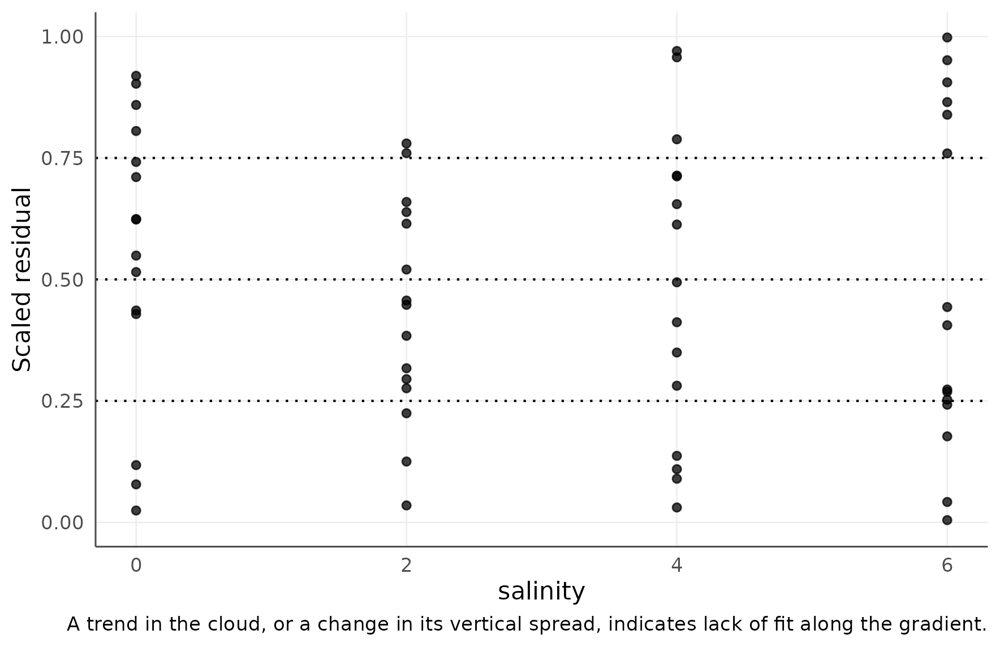
Left question: are the scaled residuals uniform? Right question: is the fit equally good along the whole gradient?
15.2 The check that actually has power
The three checks do not have equal power, and it is worth demonstrating rather than asserting. Below, the same data are fitted well by a block-adjusted GAM and badly by a straight line, which cannot follow a curved decline.
fit_line <- agri_np_regression(biomass ~ salinity, base, method = "theil_sen")
good <- agri_np_simdiag(npfit, nsim = 300, seed = 1)$checks
bad <- agri_np_simdiag(fit_line, nsim = 300, seed = 1)$checks
data.frame(check = good$check,
p_gam = round(good$p_value, 4),
p_straight_line = round(bad$p_value, 4))
#> check p_gam p_straight_line
#> 1 uniformity 0.9977 0.9994
#> 2 location along the gradient 0.7147 0.7074
#> 3 dispersion along the gradient 0.1729 0.4642The overall uniformity check pools every observation, so a fit that is too low at the ends and too high in the middle still produces residuals that are uniform on average. The location check along the gradient is the row that moves, because it compares residual positions across bins of the predictor and therefore detects a non-monotone pattern that a rank correlation would miss entirely.
The practical lesson: read the location row, not the headline uniformity row.
15.3 These are descriptions, not decision rules
Nothing here selects a method. A departure tells you that the fitted mean or the dispersion does not describe the data, which sends you back to the science, not to a different p-value.
15.4 A model can pass every check and still be useless
Diagnostics answer “is the fit wrong”. The explained-variation indices of section 10.4 and the SiZer statement of section 11 answer “is the fit worth anything”. A model can pass every diagnostic while explaining almost nothing, and reporting only the first is a common and consequential omission.
16. When the treatment can only be a whole number
16.1 The estimand, not the printing
Some agronomic treatments cannot take fractional values: plants per hill, irrigation events, sprays per season, traps per hectare. The usual practice is to fit a continuous curve, find its maximum, and round. That is wrong at the level of the estimand rather than the presentation: the rounded value is not the best admissible decision, it is the neighbour of an inadmissible one.
agriRank evaluates the fitted response directly
on the admissible integer support and defines the optimum as
the best of those values.
data(agri_density)
fi <- agri_np_regression(yield ~ plants, agri_density, method = "integer_grid",
integer_base_method = "smoothing_spline",
predictor_support = "observed_integer")
fi
#> agriRank nonparametric regression
#> Method: integer_grid
#> Response: yield
#> Predictors: plants
#> Integer decision support: {1, 2, 3, 4, 5, 6, 7, 8, 9}
#> Latent base method: smoothing_spline
agri_integer_predict(fi)
#> plants fit
#> 1 1 3.303982
#> 2 2 4.201545
#> 3 3 4.858834
#> 4 4 5.348576
#> 5 5 5.633219
#> 6 6 5.653211
#> 7 7 5.409864
#> 8 8 5.130370
#> 9 9 5.00456516.2 Fractional predictions are refused
agri_np_predict(fi, data.frame(plants = 7.5))
#> Error:
#> ! Predictions for an integer-support fit are restricted to integer predictor values.Once integer support is declared, a prediction at 7.5 plants describes an experiment that cannot be carried out. The function refuses rather than interpolating.
16.3 The decision, its uncertainty, and its confidence set
agri_integer_optimum(fi)
#> agriRank integer-support optimum
#> Objective: max
#> Admissible support: {1, 2, 3, 4, 5, 6, 7, 8, 9}
#> Optimal integer value(s): 6
#> Fitted response: 5.65321
ib <- agri_integer_bootstrap(fi, B = 199, seed = 1)
ib
#> agriRank bootstrap distribution of the integer optimum
#> Objective: max
#> Successful refits: 199 / 199
#> plants probability
#> 1 0.000000000
#> 2 0.000000000
#> 3 0.000000000
#> 4 0.000000000
#> 5 0.321608040
#> 6 0.673366834
#> 7 0.005025126
#> 8 0.000000000
#> 9 0.000000000The bootstrap does not produce an interval here, because the quantity is discrete. It produces a probability mass over admissible decisions, which is the honest object: it says how often each whole number was best across resampled experiments.
agri_integer_confset(ib, level = 0.90)
#> agriRank bootstrap confidence set for an integer optimum
#> Level: 90%
#> Set: {5, 6}
#> Included bootstrap mass: 0.995The confidence set contains only admissible decisions. A set of three plant densities is a more useful answer to a grower than a single number with a symmetric interval that includes densities that cannot be planted.
16.4 Differences between adjacent decisions
agri_integer_difference(fi, order = 1L)
#> from to delta_x fit_from fit_to difference difference_per_integer
#> 1 1 2 1 3.303982 4.201545 0.89756344 0.89756344
#> 2 2 3 1 4.201545 4.858834 0.65728887 0.65728887
#> 3 3 4 1 4.858834 5.348576 0.48974195 0.48974195
#> 4 4 5 1 5.348576 5.633219 0.28464302 0.28464302
#> 5 5 6 1 5.633219 5.653211 0.01999178 0.01999178
#> 6 6 7 1 5.653211 5.409864 -0.24334647 -0.24334647
#> 7 7 8 1 5.409864 5.130370 -0.27949453 -0.27949453
#> 8 8 9 1 5.130370 5.004565 -0.12580537 -0.12580537On a discrete support the derivative is not an admissible quantity. What replaces it is the finite difference between adjacent admissible values: what is gained by planting one more. That is also the quantity an economic threshold is applied to.
agri_np_sizer(fi)
#> Error:
#> ! SiZer describes the derivative of a continuous gradient. For an integer decision support use agri_integer_difference(), which reports finite differences between admissible decisions.17. Repeated measurements
17.1 The design changes, so the analysis changes
SPAD was measured four times on the same plants. Repeated measurements on one plant are not exchangeable with measurements on different plants, and the subject has to be declared.
set.seed(1502)
times <- c(20, 35, 50, 65)
spad <- do.call(rbind, lapply(times, function(tt) {
z <- base[, c("block", "cultivar", "salinity", "salinity_f")]
z$subject <- factor(paste(z$block, z$cultivar, z$salinity, sep = "_"))
z$time <- factor(tt, levels = times)
z$spad <- 42 +
c(C1 = 0, C2 = 2.4, C3 = 1.1)[as.character(z$cultivar)] -
0.9 * z$salinity -
0.05 * (tt - 20) -
0.004 * z$salinity * (tt - 20) +
rnorm(nrow(z), 0, 1.3)
z
}))
str(spad)
#> 'data.frame': 240 obs. of 7 variables:
#> $ block : Factor w/ 5 levels "1","2","3","4",..: 1 2 3 4 5 1 2 3 4 5 ...
#> $ cultivar : Factor w/ 3 levels "C1","C2","C3": 1 1 1 1 1 2 2 2 2 2 ...
#> $ salinity : num 0 0 0 0 0 0 0 0 0 0 ...
#> $ salinity_f: Factor w/ 4 levels "0","2","4","6": 1 1 1 1 1 1 1 1 1 1 ...
#> $ subject : Factor w/ 60 levels "1_C1_0","1_C1_2",..: 1 13 25 37 49 5 17 29 41 53 ...
#> $ time : Factor w/ 4 levels "20","35","50",..: 1 1 1 1 1 1 1 1 1 1 ...
#> $ spad : num 42.6 41.7 40.6 43.1 42.9 ...
des_r <- agri_design(spad ~ cultivar * time, spad, design = "repeated",
subject = subject, within = time)
des_r
#> agriRank experimental design
#> Design: repeated
#> Response: spad
#> Factors: cultivar * time
#> Subject: subject
#> Within: time
#> Rows: 240
fit_r <- agri_rank(des_r)
fit_r$omnibus
#> [1] effect
#> <0 rows> (or 0-length row.names)17.2 Reading a repeated-measures rank analysis
The three effects answer:
| Effect | Question |
|---|---|
cultivar |
averaged over time, do cultivars differ in SPAD |
time |
averaged over cultivars, does SPAD change through the cycle |
cultivar:time |
do the cultivars follow different trajectories |
As in Part II, the interaction governs the reading of the main effects.
if (requireNamespace("ggplot2", quietly = TRUE)) {
print(
ggplot2::ggplot(spad, ggplot2::aes(x = time, y = spad,
colour = cultivar,
group = cultivar)) +
ggplot2::stat_summary(fun = mean, geom = "line", linewidth = 0.9) +
ggplot2::stat_summary(fun = mean, geom = "point", size = 2) +
ggplot2::labs(x = "Days after sowing", y = "SPAD", colour = "Cultivar") +
agri_theme()
)
}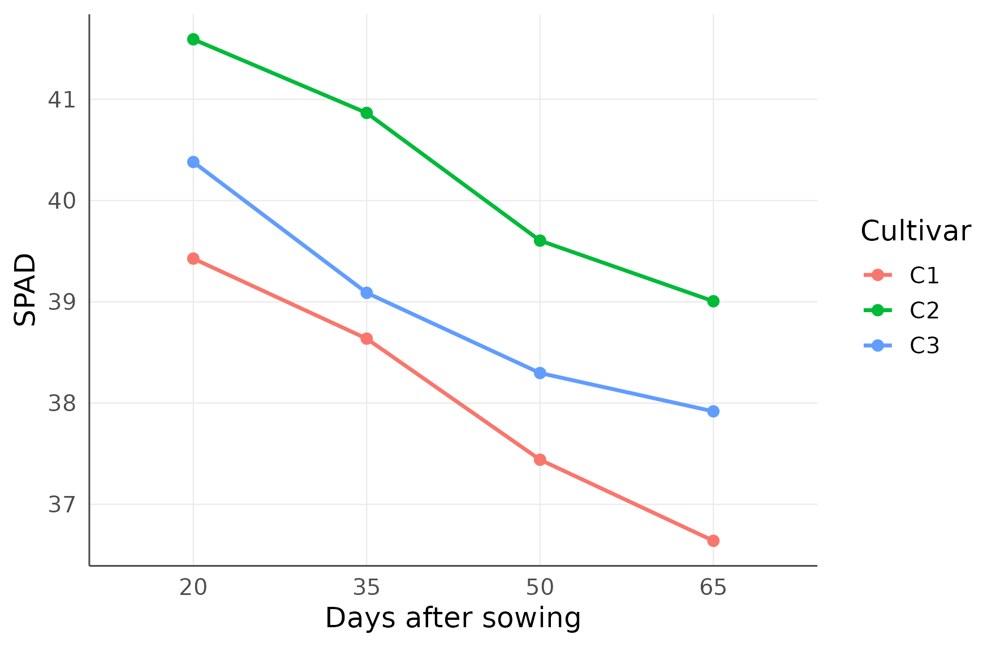
SPAD trajectories. Each line is one cultivar averaged over blocks and salinity levels.
18. Missing repeated observations
18.1 Describe the missingness before modelling it
set.seed(1503)
spad_miss <- spad
drop <- sample(which(spad_miss$time != times[1]), 30)
spad_miss$spad[drop] <- NA
des_m <- agri_design(spad ~ cultivar * time, spad_miss, design = "repeated",
subject = subject, within = time)
agri_missing_report(des_m)
#> $response
#> [1] "spad"
#>
#> $n_rows
#> [1] 240
#>
#> $n_missing
#> [1] 30
#>
#> $missing_rate
#> [1] 0.125
#>
#> $missing_rows
#> [1] 70 71 74 80 82 85 98 102 103 106 109 111 116 124 125 129 133 134 140
#> [20] 160 165 166 182 184 194 202 205 213 214 215
#>
#> $assumption_note
#> [1] "The missingness mechanism cannot be established from observed data alone. MCAR/MAR/MNAR assumptions require scientific justification and sensitivity analysis."
#>
#> $repeated
#> $repeated$n_subjects
#> [1] 60
#>
#> $repeated$n_occasions
#> [1] 4
#>
#> $repeated$complete_subjects
#> [1] 37
#>
#> $repeated$incomplete_subjects
#> [1] 23
#>
#> $repeated$subjects_with_no_observed_response
#> [1] 0
#>
#> $repeated$observed_by_occasion
#> 20 35 50 65
#> 60 47 51 52
#>
#> $repeated$missing_rate_by_occasion
#> 20 35 50 65
#> 0.0000000 0.2166667 0.1500000 0.1333333
#>
#> $repeated$pattern_counts
#> patterns
#> 1111 1011 1101 1110 1001 1010 1000 1100
#> 37 8 5 4 2 2 1 1
#>
#> $repeated$monotone_subjects
#> [1] 43
#>
#> $repeated$nonmonotone_subjects
#> [1] 17
#>
#> $repeated$observation_matrix
#> 20 35 50 65
#> C1@@1_C1_0 TRUE TRUE TRUE TRUE
#> C1@@1_C1_2 TRUE TRUE TRUE TRUE
#> C1@@1_C1_4 TRUE TRUE TRUE TRUE
#> C1@@1_C1_6 TRUE FALSE FALSE TRUE
#> C1@@2_C1_0 TRUE TRUE TRUE FALSE
#> C1@@2_C1_2 TRUE TRUE TRUE TRUE
#> C1@@2_C1_4 TRUE TRUE TRUE TRUE
#> C1@@2_C1_6 TRUE TRUE TRUE TRUE
#> C1@@3_C1_0 TRUE TRUE TRUE TRUE
#> C1@@3_C1_2 TRUE TRUE TRUE TRUE
#> C1@@3_C1_4 TRUE TRUE TRUE FALSE
#> C1@@3_C1_6 TRUE TRUE TRUE TRUE
#> C1@@4_C1_0 TRUE TRUE FALSE FALSE
#> C1@@4_C1_2 TRUE TRUE TRUE TRUE
#> C1@@4_C1_4 TRUE TRUE TRUE FALSE
#> C1@@4_C1_6 TRUE FALSE TRUE TRUE
#> C1@@5_C1_0 TRUE TRUE FALSE TRUE
#> C1@@5_C1_2 TRUE FALSE FALSE TRUE
#> C1@@5_C1_4 TRUE TRUE TRUE FALSE
#> C1@@5_C1_6 TRUE TRUE TRUE TRUE
#> C2@@1_C2_0 TRUE TRUE TRUE TRUE
#> C2@@1_C2_2 TRUE TRUE TRUE TRUE
#> C2@@1_C2_4 TRUE TRUE TRUE TRUE
#> C2@@1_C2_6 TRUE FALSE TRUE TRUE
#> C2@@2_C2_0 TRUE TRUE TRUE TRUE
#> C2@@2_C2_2 TRUE FALSE TRUE FALSE
#> C2@@2_C2_4 TRUE TRUE TRUE TRUE
#> C2@@2_C2_6 TRUE TRUE TRUE TRUE
#> C2@@3_C2_0 TRUE TRUE TRUE TRUE
#> C2@@3_C2_2 TRUE TRUE TRUE TRUE
#> C2@@3_C2_4 TRUE FALSE TRUE TRUE
#> C2@@3_C2_6 TRUE TRUE TRUE TRUE
#> C2@@4_C2_0 TRUE TRUE FALSE TRUE
#> C2@@4_C2_2 TRUE TRUE TRUE TRUE
#> C2@@4_C2_4 TRUE TRUE TRUE TRUE
#> C2@@4_C2_6 TRUE TRUE TRUE TRUE
#> C2@@5_C2_0 TRUE FALSE TRUE TRUE
#> C2@@5_C2_2 TRUE FALSE TRUE FALSE
#> C2@@5_C2_4 TRUE TRUE FALSE TRUE
#> C2@@5_C2_6 TRUE TRUE TRUE TRUE
#> C3@@1_C3_0 TRUE FALSE TRUE TRUE
#> C3@@1_C3_2 TRUE TRUE TRUE TRUE
#> C3@@1_C3_4 TRUE TRUE TRUE TRUE
#> C3@@1_C3_6 TRUE FALSE TRUE TRUE
#> C3@@2_C3_0 TRUE TRUE TRUE TRUE
#> C3@@2_C3_2 TRUE TRUE TRUE TRUE
#> C3@@2_C3_4 TRUE FALSE TRUE TRUE
#> C3@@2_C3_6 TRUE TRUE TRUE TRUE
#> C3@@3_C3_0 TRUE TRUE FALSE TRUE
#> C3@@3_C3_2 TRUE TRUE TRUE TRUE
#> C3@@3_C3_4 TRUE FALSE TRUE TRUE
#> C3@@3_C3_6 TRUE TRUE TRUE TRUE
#> C3@@4_C3_0 TRUE FALSE FALSE FALSE
#> C3@@4_C3_2 TRUE TRUE TRUE TRUE
#> C3@@4_C3_4 TRUE TRUE TRUE TRUE
#> C3@@4_C3_6 TRUE TRUE TRUE TRUE
#> C3@@5_C3_0 TRUE TRUE TRUE TRUE
#> C3@@5_C3_2 TRUE TRUE TRUE TRUE
#> C3@@5_C3_4 TRUE TRUE FALSE TRUE
#> C3@@5_C3_6 TRUE TRUE TRUE TRUE
#>
#>
#> attr(,"class")
#> [1] "agri_missing_report"The report answers three separate questions: how much is missing, where it is concentrated, and whether the pattern is related to the design. Those are not the same question, and a single overall percentage answers none of them well.
18.2 Sensitivity, not imputation
ms <- agri_missing_sensitivity(des_m, B = 199, seed = 1)
ms
#> $comparison
#> effect value_all_available p_boot_all_available
#> 1 cultivar 3.9537962 0.025
#> 2 cultivar:time 0.3164831 0.955
#> 3 time 33.4011175 0.005
#> value_complete_subjects p_boot_complete_subjects
#> 1 2.2989299 0.150
#> 2 0.5783146 0.740
#> 3 28.2730480 0.005
#>
#> $all_available
#> $method
#> [1] "incomplete repeated-measures rank wild bootstrap"
#>
#> $statistic
#> [1] "ATS"
#>
#> $weights
#> [1] "rademacher"
#>
#> $B
#> [1] 199
#>
#> $seed
#> [1] 1
#>
#> $missing_assumption
#> [1] "MCAR"
#>
#> $omnibus
#> effect statistic value df p_boot p_asymptotic
#> cultivar cultivar ATS 3.9537962 1.985373 0.025 1.943502e-02
#> time time ATS 33.4011175 2.875597 0.005 8.631455e-21
#> cultivar:time cultivar:time ATS 0.3164831 5.605267 0.955 9.197557e-01
#>
#> $effects
#> cell cultivar time relative_marginal_effect
#> 1 1 C1 20 0.5333333
#> 2 2 C1 35 0.4732493
#> 3 3 C1 50 0.3068452
#> 4 4 C1 65 0.2677778
#> 5 5 C2 20 0.7521429
#> 6 6 C2 35 0.6636508
#> 7 7 C2 50 0.5515873
#> 8 8 C2 65 0.4695767
#> 9 9 C3 20 0.6242857
#> 10 10 C3 35 0.5068254
#> 11 11 C3 50 0.3967787
#> 12 12 C3 65 0.3763158
#>
#> $covariance
#> [,1] [,2] [,3] [,4] [,5] [,6] [,7]
#> [1,] 0.2118475 0.1247552 0.1559175 0.1452261 0.00000000 0.00000000 0.00000000
#> [2,] 0.1247552 0.1675959 0.1231294 0.1242099 0.00000000 0.00000000 0.00000000
#> [3,] 0.1559175 0.1231294 0.2300053 0.1645357 0.00000000 0.00000000 0.00000000
#> [4,] 0.1452261 0.1242099 0.1645357 0.2462646 0.00000000 0.00000000 0.00000000
#> [5,] 0.0000000 0.0000000 0.0000000 0.0000000 0.11489062 0.08304276 0.09752568
#> [6,] 0.0000000 0.0000000 0.0000000 0.0000000 0.08304276 0.21177670 0.14560810
#> [7,] 0.0000000 0.0000000 0.0000000 0.0000000 0.09752568 0.14560810 0.27484772
#> [8,] 0.0000000 0.0000000 0.0000000 0.0000000 0.12906985 0.19061764 0.22465257
#> [9,] 0.0000000 0.0000000 0.0000000 0.0000000 0.00000000 0.00000000 0.00000000
#> [10,] 0.0000000 0.0000000 0.0000000 0.0000000 0.00000000 0.00000000 0.00000000
#> [11,] 0.0000000 0.0000000 0.0000000 0.0000000 0.00000000 0.00000000 0.00000000
#> [12,] 0.0000000 0.0000000 0.0000000 0.0000000 0.00000000 0.00000000 0.00000000
#> [,8] [,9] [,10] [,11] [,12]
#> [1,] 0.0000000 0.0000000 0.0000000 0.0000000 0.0000000
#> [2,] 0.0000000 0.0000000 0.0000000 0.0000000 0.0000000
#> [3,] 0.0000000 0.0000000 0.0000000 0.0000000 0.0000000
#> [4,] 0.0000000 0.0000000 0.0000000 0.0000000 0.0000000
#> [5,] 0.1290699 0.0000000 0.0000000 0.0000000 0.0000000
#> [6,] 0.1906176 0.0000000 0.0000000 0.0000000 0.0000000
#> [7,] 0.2246526 0.0000000 0.0000000 0.0000000 0.0000000
#> [8,] 0.3128086 0.0000000 0.0000000 0.0000000 0.0000000
#> [9,] 0.0000000 0.2204468 0.1634419 0.2092612 0.1618737
#> [10,] 0.0000000 0.1634419 0.3002587 0.1871843 0.1841471
#> [11,] 0.0000000 0.2092612 0.1871843 0.3179795 0.2180551
#> [12,] 0.0000000 0.1618737 0.1841471 0.2180551 0.2284630
#>
#> $p_vector
#> [1] 0.5333333 0.4732493 0.3068452 0.2677778 0.7521429 0.6636508 0.5515873
#> [8] 0.4695767 0.6242857 0.5068254 0.3967787 0.3763158
#>
#> $contrasts
#> $contrasts$cultivar
#> [,1] [,2] [,3] [,4] [,5] [,6] [,7] [,8] [,9] [,10] [,11] [,12]
#> [1,] -0.25 -0.25 -0.25 -0.25 0.25 0.25 0.25 0.25 0.0 0.0 0.0 0.0
#> [2,] -0.25 -0.25 -0.25 -0.25 -0.25 -0.25 -0.25 -0.25 0.5 0.5 0.5 0.5
#>
#> $contrasts$time
#> [,1] [,2] [,3] [,4] [,5] [,6] [,7]
#> [1,] -0.3333333 0.3333333 0.0000000 0 -0.3333333 0.3333333 0.0000000
#> [2,] -0.3333333 -0.3333333 0.6666667 0 -0.3333333 -0.3333333 0.6666667
#> [3,] -0.3333333 -0.3333333 -0.3333333 1 -0.3333333 -0.3333333 -0.3333333
#> [,8] [,9] [,10] [,11] [,12]
#> [1,] 0 -0.3333333 0.3333333 0.0000000 0
#> [2,] 0 -0.3333333 -0.3333333 0.6666667 0
#> [3,] 1 -0.3333333 -0.3333333 -0.3333333 1
#>
#> $contrasts$`cultivar:time`
#> [,1] [,2] [,3] [,4] [,5] [,6] [,7] [,8] [,9] [,10] [,11] [,12]
#> [1,] 1 -1 0 0 -1 1 0 0 0 0 0 0
#> [2,] 1 1 -2 0 -1 -1 2 0 0 0 0 0
#> [3,] 1 1 1 -3 -1 -1 -1 3 0 0 0 0
#> [4,] 1 -1 0 0 1 -1 0 0 -2 2 0 0
#> [5,] 1 1 -2 0 1 1 -2 0 -2 -2 4 0
#> [6,] 1 1 1 -3 1 1 1 -3 -2 -2 -2 6
#>
#>
#> $boot_statistics
#> $boot_statistics$cultivar
#> [1] 1.148826804 0.369387773 1.364925349 0.286074411 2.276857336 1.124281769
#> [7] 0.682930442 2.254756163 2.656729643 0.109259856 0.412088318 0.168874250
#> [13] 0.006967289 0.257765884 0.031273155 1.071656993 0.347918005 1.582518263
#> [19] 0.019711842 0.427965368 0.242822888 0.632585679 1.953029391 0.355693853
#> [25] 1.543811579 0.720676214 1.026238557 1.393346488 2.500532626 0.977404159
#> [31] 0.223184506 0.196978636 2.615359722 0.823283112 1.225730285 0.585063249
#> [37] 0.196663416 1.770407781 0.883317845 0.232590566 1.430054614 0.078722535
#> [43] 0.584195142 0.171208321 0.006132017 0.235368491 0.230100561 0.881258992
#> [49] 0.852523432 1.522392519 0.603673426 0.878198572 0.053677486 2.643011453
#> [55] 0.727855691 2.432685025 2.530124931 0.560122555 0.102483394 2.342007721
#> [61] 0.811307757 1.644700751 0.148829374 0.219618891 0.131253391 1.476556051
#> [67] 0.111949344 0.136756543 0.118797658 0.728795143 0.081012865 0.129035782
#> [73] 0.346604755 0.163579860 0.178327305 1.782104698 2.242337948 0.916037321
#> [79] 0.479661631 2.330297309 1.020345969 0.289253555 0.749773224 0.163975502
#> [85] 2.515803740 1.365219017 0.250776445 0.546250463 0.586547789 0.625318287
#> [91] 1.505068688 0.314363304 0.487267968 1.384993552 1.176061551 0.300971980
#> [97] 1.188628269 1.362662783 1.227685492 1.232140272 1.416827933 1.326917186
#> [103] 0.138738618 1.557549409 2.032413796 1.930482442 0.217825378 0.501066039
#> [109] 0.173377745 2.540325927 1.796120800 1.798932240 1.339452107 2.490163717
#> [115] 3.400290526 1.308195199 0.661346587 0.528876668 2.843711581 2.130266682
#> [121] 0.170726599 0.803046490 1.300670985 0.952318422 1.356771859 0.085491117
#> [127] 0.481704192 2.239146030 5.369855373 0.521411438 0.908053285 0.136654611
#> [133] 2.491644594 3.101887645 0.774948966 1.531473125 0.468723176 0.742745136
#> [139] 1.505452359 0.487128827 0.050990461 1.510133334 0.330003388 0.281873999
#> [145] 2.757968202 0.302684293 0.114437682 0.275967689 4.203811663 2.669471170
#> [151] 4.567104301 3.743648913 0.798229397 0.320294928 1.366364122 0.922108952
#> [157] 2.170788615 0.480505055 1.010171605 0.052208140 3.054360187 0.258612248
#> [163] 0.436561919 6.359202255 0.566582941 1.207316604 0.088937998 0.930361173
#> [169] 1.261503163 2.175884694 0.682923376 0.701814342 0.774577696 0.184027791
#> [175] 2.403977686 0.083875803 0.079089165 1.583916546 0.440684052 0.371725818
#> [181] 0.165456278 0.316445904 0.202672867 0.952803076 1.154715484 0.501470217
#> [187] 2.027180827 1.336437666 0.139821127 1.230713953 0.153217553 0.120679304
#> [193] 0.100720323 0.075086454 0.308538960 0.741270077 0.271289622 0.514617778
#> [199] 0.424794772
#>
#> $boot_statistics$time
#> [1] 0.04436645 1.54519770 0.33186145 0.09904728 0.62180103 1.01206098
#> [7] 2.67943942 1.30041888 0.35416047 2.12567154 0.20800915 0.42226664
#> [13] 0.13659456 1.30643887 0.21569052 0.64140471 1.17539325 0.76763216
#> [19] 0.27319071 0.15890055 0.83844549 0.86005660 0.57167139 1.44297977
#> [25] 0.22620655 0.90459444 0.19599938 0.79719902 0.03061822 1.62976979
#> [31] 0.83151996 0.79284615 0.11018049 0.23237264 0.42256319 2.41504157
#> [37] 1.12209598 0.20880799 0.70008130 0.68375708 0.86128717 2.56015574
#> [43] 2.63387858 1.26824905 1.00437990 0.30048050 2.60997641 0.43573320
#> [49] 0.62015726 0.79314862 0.78274759 0.57929068 0.44878868 0.23279461
#> [55] 1.68289024 0.41325035 0.84037987 0.75534950 3.58542406 1.54507130
#> [61] 1.79555503 0.30158482 1.48352689 1.46424702 0.31104592 0.45413416
#> [67] 0.05628303 0.57805316 1.25743050 2.91409126 0.97987256 0.22986482
#> [73] 2.16463403 1.61643075 1.47345277 0.02884606 0.39569901 0.38213401
#> [79] 0.61944898 3.15030490 0.54800596 0.84539038 1.77225044 1.13701296
#> [85] 1.11551487 0.05842370 1.02519539 1.82733261 0.59745441 2.54391563
#> [91] 0.62596468 0.57892221 0.24162156 0.69745779 3.23284182 0.19382826
#> [97] 1.40591443 0.19935300 0.36419167 0.63077773 0.22069451 1.07195628
#> [103] 1.20549540 0.20941448 0.34347616 1.77185859 0.64715824 0.17248459
#> [109] 1.23459194 1.06527857 0.61546759 0.79153017 0.30533113 1.25298901
#> [115] 0.10100240 1.31556174 0.25723697 0.80655683 0.76604090 0.74509263
#> [121] 1.67530399 0.82823273 0.24234742 1.82754947 0.26865058 2.61784283
#> [127] 0.21166593 3.16582626 0.30887031 1.03099328 1.92182221 1.29344069
#> [133] 2.68500576 5.37575080 0.53548574 0.31311107 0.42471009 0.18490834
#> [139] 0.84849609 0.79268412 0.63224662 0.23914437 0.61802045 1.89568243
#> [145] 0.06834849 0.81589720 0.74278642 0.92306301 0.79590343 0.31732630
#> [151] 0.76088676 0.94782701 2.83641710 0.71821816 1.88102757 0.84928914
#> [157] 0.71833134 0.35129663 0.49073766 0.30938746 1.68285449 0.85512919
#> [163] 0.28752523 0.26779148 0.28742392 1.34622399 0.36590399 0.47718517
#> [169] 0.57955963 0.89115211 0.74266203 0.45318545 3.31347267 2.09922681
#> [175] 1.80538491 0.61262498 0.25878512 1.04574709 0.14410921 1.02107509
#> [181] 1.25177270 0.13112936 0.39967729 2.82158559 1.89810102 2.10705755
#> [187] 0.97422757 1.04052254 2.19784118 0.64199135 2.13294089 1.71438913
#> [193] 1.68381779 0.18035818 1.07732990 0.54776338 0.06395264 0.05695940
#> [199] 0.66832992
#>
#> $boot_statistics$`cultivar:time`
#> [1] 1.0256530 0.9675373 1.6426067 1.5775140 0.6488679 1.1958112 0.8220576
#> [8] 0.8140438 1.4189958 1.7191671 0.5073644 0.8649335 0.7807095 0.2628580
#> [15] 0.5317158 0.5269294 1.0491450 0.5218725 1.4342856 1.5226224 0.3515431
#> [22] 0.6172931 0.7095999 0.4705984 0.6422815 1.1546047 1.2046436 2.0148936
#> [29] 1.6732751 1.8227480 0.5326113 0.2849136 1.1488699 1.7018697 2.2477843
#> [36] 0.8330887 0.3964235 0.8360653 0.6737245 1.5283208 0.6295509 0.5759155
#> [43] 0.6346211 1.3571909 0.5609475 0.8333590 0.5781330 1.7372985 0.6992416
#> [50] 0.9654888 1.1574054 0.7629655 0.7633013 1.5081520 0.4194311 0.5580579
#> [57] 0.4571522 0.2882052 1.4343405 1.4640478 0.5409228 1.0756705 1.1309377
#> [64] 0.6923955 0.5237455 1.5541882 0.8738439 0.9891649 1.6350596 1.2079860
#> [71] 0.7407270 0.7937933 2.0903025 0.9777707 0.9381697 1.0361075 0.9236918
#> [78] 0.2862200 0.4616177 0.5867492 0.4603530 0.9542146 1.0700618 0.6598812
#> [85] 0.7670208 1.7015114 1.0652821 0.1780119 1.0074937 0.4243743 0.7183635
#> [92] 1.0212881 0.3792802 0.5476664 0.1420211 2.3130541 0.9381637 1.7485736
#> [99] 1.1255384 1.5878765 0.9750858 1.0218056 0.5367408 0.8154456 1.8217091
#> [106] 0.1363497 1.1091498 0.6666285 0.3230295 1.9125026 0.9516182 1.0800419
#> [113] 0.5578697 1.0269576 1.3029625 1.2984838 1.7364195 1.0221775 0.8571980
#> [120] 3.1047937 1.3062822 0.1741003 0.9497909 1.3390142 1.9461611 1.0251627
#> [127] 0.7528447 0.7757680 1.9457724 0.4694294 1.1137108 0.6535648 1.0062442
#> [134] 1.0591686 1.5272896 1.1869281 1.0946671 0.9799174 1.5414313 1.3718091
#> [141] 1.0292154 1.5461731 1.1034841 1.7962381 0.8485569 0.9634654 0.5111769
#> [148] 1.3964701 1.4109563 0.5536455 0.4451547 0.5090392 0.8139768 2.0883629
#> [155] 1.9283728 1.2261139 0.8542194 1.1279119 1.5099661 0.4924014 0.5759007
#> [162] 2.3102527 1.3609762 1.4155098 1.3293997 1.2619320 1.2647251 0.7815937
#> [169] 1.0092325 0.9343729 0.3832517 1.2689412 0.3452602 0.5274624 1.2156880
#> [176] 2.5244836 0.5183818 1.0119004 0.6566665 1.2684961 0.7404076 1.0944698
#> [183] 1.4047032 3.1201832 0.5688344 0.9785479 0.2617242 1.6484129 0.4049358
#> [190] 0.8976362 0.8111798 0.4433525 1.3390491 1.3135342 1.5351027 0.5342425
#> [197] 0.6081362 0.7897550 0.7715437
#>
#>
#> $missing
#> $response
#> [1] "spad"
#>
#> $n_rows
#> [1] 240
#>
#> $n_missing
#> [1] 30
#>
#> $missing_rate
#> [1] 0.125
#>
#> $missing_rows
#> [1] 70 71 74 80 82 85 98 102 103 106 109 111 116 124 125 129 133 134 140
#> [20] 160 165 166 182 184 194 202 205 213 214 215
#>
#> $assumption_note
#> [1] "The missingness mechanism cannot be established from observed data alone. MCAR/MAR/MNAR assumptions require scientific justification and sensitivity analysis."
#>
#> $repeated
#> $repeated$n_subjects
#> [1] 60
#>
#> $repeated$n_occasions
#> [1] 4
#>
#> $repeated$complete_subjects
#> [1] 37
#>
#> $repeated$incomplete_subjects
#> [1] 23
#>
#> $repeated$subjects_with_no_observed_response
#> [1] 0
#>
#> $repeated$observed_by_occasion
#> 20 35 50 65
#> 60 47 51 52
#>
#> $repeated$missing_rate_by_occasion
#> 20 35 50 65
#> 0.0000000 0.2166667 0.1500000 0.1333333
#>
#> $repeated$pattern_counts
#> patterns
#> 1111 1011 1101 1110 1001 1010 1000 1100
#> 37 8 5 4 2 2 1 1
#>
#> $repeated$monotone_subjects
#> [1] 43
#>
#> $repeated$nonmonotone_subjects
#> [1] 17
#>
#> $repeated$observation_matrix
#> 20 35 50 65
#> C1@@1_C1_0 TRUE TRUE TRUE TRUE
#> C1@@1_C1_2 TRUE TRUE TRUE TRUE
#> C1@@1_C1_4 TRUE TRUE TRUE TRUE
#> C1@@1_C1_6 TRUE FALSE FALSE TRUE
#> C1@@2_C1_0 TRUE TRUE TRUE FALSE
#> C1@@2_C1_2 TRUE TRUE TRUE TRUE
#> C1@@2_C1_4 TRUE TRUE TRUE TRUE
#> C1@@2_C1_6 TRUE TRUE TRUE TRUE
#> C1@@3_C1_0 TRUE TRUE TRUE TRUE
#> C1@@3_C1_2 TRUE TRUE TRUE TRUE
#> C1@@3_C1_4 TRUE TRUE TRUE FALSE
#> C1@@3_C1_6 TRUE TRUE TRUE TRUE
#> C1@@4_C1_0 TRUE TRUE FALSE FALSE
#> C1@@4_C1_2 TRUE TRUE TRUE TRUE
#> C1@@4_C1_4 TRUE TRUE TRUE FALSE
#> C1@@4_C1_6 TRUE FALSE TRUE TRUE
#> C1@@5_C1_0 TRUE TRUE FALSE TRUE
#> C1@@5_C1_2 TRUE FALSE FALSE TRUE
#> C1@@5_C1_4 TRUE TRUE TRUE FALSE
#> C1@@5_C1_6 TRUE TRUE TRUE TRUE
#> C2@@1_C2_0 TRUE TRUE TRUE TRUE
#> C2@@1_C2_2 TRUE TRUE TRUE TRUE
#> C2@@1_C2_4 TRUE TRUE TRUE TRUE
#> C2@@1_C2_6 TRUE FALSE TRUE TRUE
#> C2@@2_C2_0 TRUE TRUE TRUE TRUE
#> C2@@2_C2_2 TRUE FALSE TRUE FALSE
#> C2@@2_C2_4 TRUE TRUE TRUE TRUE
#> C2@@2_C2_6 TRUE TRUE TRUE TRUE
#> C2@@3_C2_0 TRUE TRUE TRUE TRUE
#> C2@@3_C2_2 TRUE TRUE TRUE TRUE
#> C2@@3_C2_4 TRUE FALSE TRUE TRUE
#> C2@@3_C2_6 TRUE TRUE TRUE TRUE
#> C2@@4_C2_0 TRUE TRUE FALSE TRUE
#> C2@@4_C2_2 TRUE TRUE TRUE TRUE
#> C2@@4_C2_4 TRUE TRUE TRUE TRUE
#> C2@@4_C2_6 TRUE TRUE TRUE TRUE
#> C2@@5_C2_0 TRUE FALSE TRUE TRUE
#> C2@@5_C2_2 TRUE FALSE TRUE FALSE
#> C2@@5_C2_4 TRUE TRUE FALSE TRUE
#> C2@@5_C2_6 TRUE TRUE TRUE TRUE
#> C3@@1_C3_0 TRUE FALSE TRUE TRUE
#> C3@@1_C3_2 TRUE TRUE TRUE TRUE
#> C3@@1_C3_4 TRUE TRUE TRUE TRUE
#> C3@@1_C3_6 TRUE FALSE TRUE TRUE
#> C3@@2_C3_0 TRUE TRUE TRUE TRUE
#> C3@@2_C3_2 TRUE TRUE TRUE TRUE
#> C3@@2_C3_4 TRUE FALSE TRUE TRUE
#> C3@@2_C3_6 TRUE TRUE TRUE TRUE
#> C3@@3_C3_0 TRUE TRUE FALSE TRUE
#> C3@@3_C3_2 TRUE TRUE TRUE TRUE
#> C3@@3_C3_4 TRUE FALSE TRUE TRUE
#> C3@@3_C3_6 TRUE TRUE TRUE TRUE
#> C3@@4_C3_0 TRUE FALSE FALSE FALSE
#> C3@@4_C3_2 TRUE TRUE TRUE TRUE
#> C3@@4_C3_4 TRUE TRUE TRUE TRUE
#> C3@@4_C3_6 TRUE TRUE TRUE TRUE
#> C3@@5_C3_0 TRUE TRUE TRUE TRUE
#> C3@@5_C3_2 TRUE TRUE TRUE TRUE
#> C3@@5_C3_4 TRUE TRUE FALSE TRUE
#> C3@@5_C3_6 TRUE TRUE TRUE TRUE
#>
#>
#> attr(,"class")
#> [1] "agri_missing_report"
#>
#> $prep
#> $prep$groups
#> $prep$groups[[1]]
#> $prep$groups[[1]]$Y
#> 20 35 50 65
#> C1@@1_C1_0 42.59796 42.40222 42.71736 41.60981
#> C1@@2_C1_0 41.67083 40.00487 41.33583 NA
#> C1@@3_C1_0 40.56393 41.69283 38.33560 38.68097
#> C1@@4_C1_0 43.09969 40.22761 NA NA
#> C1@@5_C1_0 42.93173 41.27118 NA 39.00678
#> C1@@1_C1_2 40.78517 39.35363 38.99311 36.45142
#> C1@@2_C1_2 40.72338 40.27986 39.54302 39.68561
#> C1@@3_C1_2 41.37659 39.59830 37.41853 36.26969
#> C1@@4_C1_2 38.89721 37.79819 37.22736 38.99841
#> C1@@5_C1_2 40.91419 NA NA 39.43158
#> C1@@1_C1_4 36.85236 39.64777 35.25015 36.76387
#> C1@@2_C1_4 40.22246 38.49267 36.54559 33.04030
#> C1@@3_C1_4 37.74239 37.78053 35.35762 NA
#> C1@@4_C1_4 39.13151 36.56623 36.84423 NA
#> C1@@5_C1_4 39.32154 36.76947 37.61654 NA
#> C1@@1_C1_6 36.92104 NA NA 34.05193
#> C1@@2_C1_6 35.58489 36.80810 33.32858 31.73149
#> C1@@3_C1_6 37.54801 35.63816 35.36999 34.43178
#> C1@@4_C1_6 36.62071 NA 33.99541 32.41112
#> C1@@5_C1_6 35.03600 37.38655 35.60576 34.93116
#>
#> $prep$groups[[1]]$n
#> [1] 20
#>
#> $prep$groups[[1]]$level
#> [1] "C1"
#>
#>
#> $prep$groups[[2]]
#> $prep$groups[[2]]$Y
#> 20 35 50 65
#> C2@@1_C2_0 43.92506 43.94774 41.86726 44.24942
#> C2@@2_C2_0 44.45583 44.12293 43.62465 41.87251
#> C2@@3_C2_0 43.53881 44.68080 42.82934 42.78681
#> C2@@4_C2_0 43.83608 43.39641 NA 43.19843
#> C2@@5_C2_0 40.26263 NA 41.98431 40.96879
#> C2@@1_C2_2 41.96113 38.58320 38.36765 37.48038
#> C2@@2_C2_2 43.00226 NA 41.00935 NA
#> C2@@3_C2_2 44.37195 41.77288 39.03836 40.60378
#> C2@@4_C2_2 41.51378 38.99510 41.55341 40.78808
#> C2@@5_C2_2 43.06564 NA 42.45308 NA
#> C2@@1_C2_4 42.46037 39.62273 40.68066 37.94967
#> C2@@2_C2_4 40.54928 40.00675 39.36028 37.86710
#> C2@@3_C2_4 41.32239 NA 39.26084 37.47583
#> C2@@4_C2_4 39.28446 40.65301 39.56561 37.38117
#> C2@@5_C2_4 40.21548 40.82019 NA 35.84910
#> C2@@1_C2_6 40.74324 NA 34.40181 35.27936
#> C2@@2_C2_6 38.36570 39.27042 36.19579 35.44114
#> C2@@3_C2_6 41.18003 38.12975 36.63753 37.00644
#> C2@@4_C2_6 37.89773 40.39297 38.84662 37.50512
#> C2@@5_C2_6 39.89782 37.54530 34.81154 34.94839
#>
#> $prep$groups[[2]]$n
#> [1] 20
#>
#> $prep$groups[[2]]$level
#> [1] "C2"
#>
#>
#> $prep$groups[[3]]
#> $prep$groups[[3]]$Y
#> 20 35 50 65
#> C3@@1_C3_0 42.58581 NA 42.23606 41.77174
#> C3@@2_C3_0 43.07015 40.80828 41.79458 40.29839
#> C3@@3_C3_0 44.09807 42.58361 NA 40.90646
#> C3@@4_C3_0 43.04065 NA NA NA
#> C3@@5_C3_0 42.75978 43.73619 42.93754 42.02294
#> C3@@1_C3_2 41.66948 40.65569 39.99800 39.20475
#> C3@@2_C3_2 43.26104 37.47187 40.54447 36.59760
#> C3@@3_C3_2 41.41849 39.14769 40.38379 40.15765
#> C3@@4_C3_2 41.68710 40.71347 38.98885 36.54597
#> C3@@5_C3_2 40.56540 41.84165 39.46460 39.14480
#> C3@@1_C3_4 40.05442 37.46247 37.16782 36.62927
#> C3@@2_C3_4 40.10073 NA 34.96849 37.20201
#> C3@@3_C3_4 38.64913 NA 37.24593 38.00218
#> C3@@4_C3_4 40.62331 38.03832 37.39732 39.78760
#> C3@@5_C3_4 38.37647 39.80447 NA 38.98147
#> C3@@1_C3_6 37.19620 NA 33.54104 34.09596
#> C3@@2_C3_6 35.81656 33.62770 34.75857 32.79597
#> C3@@3_C3_6 36.50531 35.81891 36.11065 35.38962
#> C3@@4_C3_6 38.97250 37.01070 34.89505 35.25932
#> C3@@5_C3_6 37.16563 38.13508 34.74786 32.86819
#>
#> $prep$groups[[3]]$n
#> [1] 20
#>
#> $prep$groups[[3]]$level
#> [1] "C3"
#>
#>
#>
#> $prep$cell_grid
#> cultivar time
#> 1 C1 20
#> 2 C1 35
#> 3 C1 50
#> 4 C1 65
#> 5 C2 20
#> 6 C2 35
#> 7 C2 50
#> 8 C2 65
#> 9 C3 20
#> 10 C3 35
#> 11 C3 50
#> 12 C3 65
#>
#> $prep$between
#> [1] "cultivar"
#>
#> $prep$within
#> [1] "time"
#>
#> $prep$all_factors
#> [1] "cultivar" "time"
#>
#> $prep$a
#> [1] 3
#>
#> $prep$d
#> [1] 4
#>
#> $prep$response
#> [1] "spad"
#>
#>
#> $components
#> $components$p
#> [1] 0.5333333 0.4732493 0.3068452 0.2677778 0.7521429 0.6636508 0.5515873
#> [8] 0.4695767 0.6242857 0.5068254 0.3967787 0.3763158
#>
#> $components$Vn
#> [,1] [,2] [,3] [,4] [,5] [,6] [,7]
#> [1,] 0.2118475 0.1247552 0.1559175 0.1452261 0.00000000 0.00000000 0.00000000
#> [2,] 0.1247552 0.1675959 0.1231294 0.1242099 0.00000000 0.00000000 0.00000000
#> [3,] 0.1559175 0.1231294 0.2300053 0.1645357 0.00000000 0.00000000 0.00000000
#> [4,] 0.1452261 0.1242099 0.1645357 0.2462646 0.00000000 0.00000000 0.00000000
#> [5,] 0.0000000 0.0000000 0.0000000 0.0000000 0.11489062 0.08304276 0.09752568
#> [6,] 0.0000000 0.0000000 0.0000000 0.0000000 0.08304276 0.21177670 0.14560810
#> [7,] 0.0000000 0.0000000 0.0000000 0.0000000 0.09752568 0.14560810 0.27484772
#> [8,] 0.0000000 0.0000000 0.0000000 0.0000000 0.12906985 0.19061764 0.22465257
#> [9,] 0.0000000 0.0000000 0.0000000 0.0000000 0.00000000 0.00000000 0.00000000
#> [10,] 0.0000000 0.0000000 0.0000000 0.0000000 0.00000000 0.00000000 0.00000000
#> [11,] 0.0000000 0.0000000 0.0000000 0.0000000 0.00000000 0.00000000 0.00000000
#> [12,] 0.0000000 0.0000000 0.0000000 0.0000000 0.00000000 0.00000000 0.00000000
#> [,8] [,9] [,10] [,11] [,12]
#> [1,] 0.0000000 0.0000000 0.0000000 0.0000000 0.0000000
#> [2,] 0.0000000 0.0000000 0.0000000 0.0000000 0.0000000
#> [3,] 0.0000000 0.0000000 0.0000000 0.0000000 0.0000000
#> [4,] 0.0000000 0.0000000 0.0000000 0.0000000 0.0000000
#> [5,] 0.1290699 0.0000000 0.0000000 0.0000000 0.0000000
#> [6,] 0.1906176 0.0000000 0.0000000 0.0000000 0.0000000
#> [7,] 0.2246526 0.0000000 0.0000000 0.0000000 0.0000000
#> [8,] 0.3128086 0.0000000 0.0000000 0.0000000 0.0000000
#> [9,] 0.0000000 0.2204468 0.1634419 0.2092612 0.1618737
#> [10,] 0.0000000 0.1634419 0.3002587 0.1871843 0.1841471
#> [11,] 0.0000000 0.2092612 0.1871843 0.3179795 0.2180551
#> [12,] 0.0000000 0.1618737 0.1841471 0.2180551 0.2284630
#>
#> $components$V_list
#> $components$V_list[[1]]
#> [,1] [,2] [,3] [,4]
#> [1,] 0.07061583 0.04158505 0.05197251 0.04840870
#> [2,] 0.04158505 0.05586529 0.04104312 0.04140330
#> [3,] 0.05197251 0.04104312 0.07666844 0.05484523
#> [4,] 0.04840870 0.04140330 0.05484523 0.08208818
#>
#> $components$V_list[[2]]
#> [,1] [,2] [,3] [,4]
#> [1,] 0.03829687 0.02768092 0.03250856 0.04302328
#> [2,] 0.02768092 0.07059223 0.04853603 0.06353921
#> [3,] 0.03250856 0.04853603 0.09161591 0.07488419
#> [4,] 0.04302328 0.06353921 0.07488419 0.10426953
#>
#> $components$V_list[[3]]
#> [,1] [,2] [,3] [,4]
#> [1,] 0.07348228 0.05448062 0.06975373 0.05395791
#> [2,] 0.05448062 0.10008624 0.06239475 0.06138237
#> [3,] 0.06975373 0.06239475 0.10599318 0.07268504
#> [4,] 0.05395791 0.06138237 0.07268504 0.07615432
#>
#>
#> $components$R_list
#> $components$R_list[[1]]
#> 20 35 50 65
#> C1@@1_C1_0 184 179 185 164
#> C1@@2_C1_0 166 123 159 NA
#> C1@@3_C1_0 138 168 83 90
#> C1@@4_C1_0 195 130 NA NA
#> C1@@5_C1_0 189 157 NA 99
#> C1@@1_C1_2 148 109 96 38
#> C1@@2_C1_2 146 132 113 118
#> C1@@3_C1_2 160 115 64 37
#> C1@@4_C1_2 92 75 59 98
#> C1@@5_C1_2 153 NA NA 111
#> C1@@1_C1_4 51 117 22 47
#> C1@@2_C1_4 129 87 40 5
#> C1@@3_C1_4 73 74 25 NA
#> C1@@4_C1_4 101 42 50 NA
#> C1@@5_C1_4 108 48 72 NA
#> C1@@1_C1_6 52 NA NA 10
#> C1@@2_C1_6 29 49 6 1
#> C1@@3_C1_6 71 31 26 13
#> C1@@4_C1_6 44 NA 9 2
#> C1@@5_C1_6 21 62 30 18
#>
#> $components$R_list[[2]]
#> 20 35 50 65
#> C2@@1_C2_0 203 204 173 207
#> C2@@2_C2_0 209 206 200 174
#> C2@@3_C2_0 199 210 188 187
#> C2@@4_C2_0 202 198 NA 196
#> C2@@5_C2_0 131 NA 176 154
#> C2@@1_C2_2 175 88 85 68
#> C2@@2_C2_2 191 NA 155 NA
#> C2@@3_C2_2 208 170 100 140
#> C2@@4_C2_2 162 97 163 149
#> C2@@5_C2_2 193 NA 180 NA
#> C2@@1_C2_4 181 116 144 78
#> C2@@2_C2_4 137 124 110 76
#> C2@@3_C2_4 158 NA 105 67
#> C2@@4_C2_4 107 142 114 61
#> C2@@5_C2_4 128 151 NA 34
#> C2@@1_C2_6 147 NA 12 24
#> C2@@2_C2_6 84 106 36 28
#> C2@@3_C2_6 156 81 46 53
#> C2@@4_C2_6 77 135 91 69
#> C2@@5_C2_6 121 70 16 19
#>
#> $components$R_list[[3]]
#> 20 35 50 65
#> C3@@1_C3_0 183 NA 178 169
#> C3@@2_C3_0 194 150 171 133
#> C3@@3_C3_0 205 182 NA 152
#> C3@@4_C3_0 192 NA NA NA
#> C3@@5_C3_0 186 201 190 177
#> C3@@1_C3_2 165 143 122 104
#> C3@@2_C3_2 197 66 136 43
#> C3@@3_C3_2 161 103 134 127
#> C3@@4_C3_2 167 145 95 41
#> C3@@5_C3_2 139 172 112 102
#> C3@@1_C3_4 125 65 56 45
#> C3@@2_C3_4 126 NA 20 58
#> C3@@3_C3_4 89 NA 60 79
#> C3@@4_C3_4 141 80 63 119
#> C3@@5_C3_4 86 120 NA 94
#> C3@@1_C3_6 57 NA 7 11
#> C3@@2_C3_6 32 8 15 3
#> C3@@3_C3_6 39 33 35 27
#> C3@@4_C3_6 93 54 17 23
#> C3@@5_C3_6 55 82 14 4
#>
#>
#> $components$lambda_list
#> $components$lambda_list[[1]]
#> 20 35 50 65
#> 20 17 16 15
#>
#> $components$lambda_list[[2]]
#> 20 35 50 65
#> 20 15 18 18
#>
#> $components$lambda_list[[3]]
#> 20 35 50 65
#> 20 15 17 19
#>
#>
#> $components$meanR_list
#> $components$meanR_list[[1]]
#> [1] 112.50000 99.88235 64.93750 56.73333
#>
#> $components$meanR_list[[2]]
#> [1] 158.45000 139.86667 116.33333 99.11111
#>
#> $components$meanR_list[[3]]
#> [1] 131.60000 106.93333 83.82353 79.52632
#>
#>
#> $components$N
#> [1] 210
#>
#> $components$n
#> [1] 60
#>
#>
#> $reference
#> [1] "Amro L, Konietschke F, Pauly M (2024). Biometrical Journal 66:e70008. doi:10.1002/bimj.70008"
#>
#> $status
#> [1] "experimental: formula-level implementation requires independent benchmark validation before confirmatory use"
#>
#> attr(,"class")
#> [1] "agri_incomplete_wild" "agri_engine_fit"
#>
#> $complete_subjects
#> $method
#> [1] "incomplete repeated-measures rank wild bootstrap"
#>
#> $statistic
#> [1] "ATS"
#>
#> $weights
#> [1] "rademacher"
#>
#> $B
#> [1] 199
#>
#> $seed
#> [1] 1
#>
#> $missing_assumption
#> [1] "MCAR"
#>
#> $omnibus
#> effect statistic value df p_boot p_asymptotic
#> cultivar cultivar ATS 2.2989299 1.990908 0.150 1.006242e-01
#> time time ATS 28.2730480 2.666580 0.005 1.610792e-16
#> cultivar:time cultivar:time ATS 0.5783146 5.086097 0.740 7.196314e-01
#>
#> $effects
#> cell cultivar time relative_marginal_effect
#> 1 1 C1 20 0.5181204
#> 2 2 C1 35 0.4953931
#> 3 3 C1 50 0.3160319
#> 4 4 C1 65 0.2767199
#> 5 5 C2 20 0.7466216
#> 6 6 C2 35 0.6499480
#> 7 7 C2 50 0.5465177
#> 8 8 C2 65 0.4857069
#> 9 9 C3 20 0.6307173
#> 10 10 C3 35 0.4883056
#> 11 11 C3 50 0.4300936
#> 12 12 C3 65 0.3552495
#>
#> $covariance
#> [,1] [,2] [,3] [,4] [,5] [,6] [,7]
#> [1,] 0.2580718 0.1567009 0.1929738 0.1461316 0.00000000 0.00000000 0.0000000
#> [2,] 0.1567009 0.1774207 0.1531103 0.1530545 0.00000000 0.00000000 0.0000000
#> [3,] 0.1929738 0.1531103 0.2123185 0.1888918 0.00000000 0.00000000 0.0000000
#> [4,] 0.1461316 0.1530545 0.1888918 0.2295259 0.00000000 0.00000000 0.0000000
#> [5,] 0.0000000 0.0000000 0.0000000 0.0000000 0.13255804 0.06729686 0.1092884
#> [6,] 0.0000000 0.0000000 0.0000000 0.0000000 0.06729686 0.14722766 0.1400894
#> [7,] 0.0000000 0.0000000 0.0000000 0.0000000 0.10928837 0.14008942 0.2299146
#> [8,] 0.0000000 0.0000000 0.0000000 0.0000000 0.13879505 0.15945013 0.2156215
#> [9,] 0.0000000 0.0000000 0.0000000 0.0000000 0.00000000 0.00000000 0.0000000
#> [10,] 0.0000000 0.0000000 0.0000000 0.0000000 0.00000000 0.00000000 0.0000000
#> [11,] 0.0000000 0.0000000 0.0000000 0.0000000 0.00000000 0.00000000 0.0000000
#> [12,] 0.0000000 0.0000000 0.0000000 0.0000000 0.00000000 0.00000000 0.0000000
#> [,8] [,9] [,10] [,11] [,12]
#> [1,] 0.0000000 0.0000000 0.0000000 0.0000000 0.0000000
#> [2,] 0.0000000 0.0000000 0.0000000 0.0000000 0.0000000
#> [3,] 0.0000000 0.0000000 0.0000000 0.0000000 0.0000000
#> [4,] 0.0000000 0.0000000 0.0000000 0.0000000 0.0000000
#> [5,] 0.1387950 0.0000000 0.0000000 0.0000000 0.0000000
#> [6,] 0.1594501 0.0000000 0.0000000 0.0000000 0.0000000
#> [7,] 0.2156215 0.0000000 0.0000000 0.0000000 0.0000000
#> [8,] 0.2647379 0.0000000 0.0000000 0.0000000 0.0000000
#> [9,] 0.0000000 0.2173607 0.1612043 0.2078169 0.1603555
#> [10,] 0.0000000 0.1612043 0.2258999 0.1881114 0.1677520
#> [11,] 0.0000000 0.2078169 0.1881114 0.2528336 0.1959118
#> [12,] 0.0000000 0.1603555 0.1677520 0.1959118 0.2196912
#>
#> $p_vector
#> [1] 0.5181204 0.4953931 0.3160319 0.2767199 0.7466216 0.6499480 0.5465177
#> [8] 0.4857069 0.6307173 0.4883056 0.4300936 0.3552495
#>
#> $contrasts
#> $contrasts$cultivar
#> [,1] [,2] [,3] [,4] [,5] [,6] [,7] [,8] [,9] [,10] [,11] [,12]
#> [1,] -0.25 -0.25 -0.25 -0.25 0.25 0.25 0.25 0.25 0.0 0.0 0.0 0.0
#> [2,] -0.25 -0.25 -0.25 -0.25 -0.25 -0.25 -0.25 -0.25 0.5 0.5 0.5 0.5
#>
#> $contrasts$time
#> [,1] [,2] [,3] [,4] [,5] [,6] [,7]
#> [1,] -0.3333333 0.3333333 0.0000000 0 -0.3333333 0.3333333 0.0000000
#> [2,] -0.3333333 -0.3333333 0.6666667 0 -0.3333333 -0.3333333 0.6666667
#> [3,] -0.3333333 -0.3333333 -0.3333333 1 -0.3333333 -0.3333333 -0.3333333
#> [,8] [,9] [,10] [,11] [,12]
#> [1,] 0 -0.3333333 0.3333333 0.0000000 0
#> [2,] 0 -0.3333333 -0.3333333 0.6666667 0
#> [3,] 1 -0.3333333 -0.3333333 -0.3333333 1
#>
#> $contrasts$`cultivar:time`
#> [,1] [,2] [,3] [,4] [,5] [,6] [,7] [,8] [,9] [,10] [,11] [,12]
#> [1,] 1 -1 0 0 -1 1 0 0 0 0 0 0
#> [2,] 1 1 -2 0 -1 -1 2 0 0 0 0 0
#> [3,] 1 1 1 -3 -1 -1 -1 3 0 0 0 0
#> [4,] 1 -1 0 0 1 -1 0 0 -2 2 0 0
#> [5,] 1 1 -2 0 1 1 -2 0 -2 -2 4 0
#> [6,] 1 1 1 -3 1 1 1 -3 -2 -2 -2 6
#>
#>
#> $boot_statistics
#> $boot_statistics$cultivar
#> [1] 0.594366606 1.119239645 0.097082799 0.491653413 5.068792582 0.464451405
#> [7] 1.478373085 0.432433577 0.352340247 0.006840272 1.306321175 1.002391315
#> [13] 0.571987621 2.879514922 1.933943425 0.575174004 0.211717401 0.686623517
#> [19] 0.605517927 0.463481967 0.230809485 0.338176099 0.688737014 1.889084407
#> [25] 2.780284942 0.226203208 0.636504962 1.258143553 0.498681445 0.660347175
#> [31] 3.286890304 0.129223615 2.179257312 0.626859959 1.452639529 2.052707594
#> [37] 1.372503090 0.370609006 0.003520677 1.356603197 0.098655381 0.329063717
#> [43] 0.753713423 1.195559161 1.180645527 0.121698326 2.087348426 1.576929617
#> [49] 1.575580728 0.414811676 0.754401901 3.971277216 0.105872198 4.784048617
#> [55] 0.653877067 2.668966959 2.406567484 0.304272674 1.131180458 0.579676014
#> [61] 0.536871939 1.557053059 3.070561839 0.165830533 0.800788150 0.079409326
#> [67] 0.072375518 0.954950520 0.077209816 0.051509144 1.017403288 0.206678354
#> [73] 0.320554132 0.913148521 2.608680744 0.162874860 0.560302566 3.740618902
#> [79] 0.114193320 1.211205382 0.190875024 0.441727720 3.616814508 2.077797961
#> [85] 0.404857334 0.577988145 1.829484306 0.805542407 0.921014483 0.257494358
#> [91] 0.743299209 0.416259135 0.805773341 0.484904823 0.022133158 0.761665641
#> [97] 0.443868000 0.052694949 0.074034589 0.419990760 5.189043438 0.637691716
#> [103] 0.910459261 3.249101077 2.248867195 0.092955805 0.053039930 0.071890656
#> [109] 1.109580091 0.617277880 0.129696686 0.224125725 0.200438785 2.777399344
#> [115] 2.498389518 1.663354948 1.969428578 0.461366841 0.553633737 0.259425019
#> [121] 1.455413406 0.093722838 0.343991817 0.032116505 1.388507338 2.268476688
#> [127] 3.303421715 0.076152571 2.367583097 1.006696231 0.379252975 2.518050328
#> [133] 0.206827410 0.378553888 0.383140345 0.640486598 1.725106068 0.128367960
#> [139] 2.711879319 0.206395694 0.008749363 2.241712696 0.539965157 0.137590551
#> [145] 0.198981935 0.505089129 2.946027533 1.042097790 0.810332886 1.577094115
#> [151] 0.045675137 0.110340022 2.850470372 0.919622147 0.385885187 1.116690041
#> [157] 0.524440798 1.151027963 1.281761514 0.641736551 2.400330213 3.783243286
#> [163] 0.935035189 0.311459574 0.560391638 1.178218442 0.050415345 0.897281892
#> [169] 1.340311641 1.519585761 0.055462765 1.500465705 1.149787857 0.112271077
#> [175] 0.032009321 0.025170515 3.096409554 2.124127333 2.181641366 0.161662599
#> [181] 1.454657933 2.428646039 2.879329696 0.380351738 2.283877310 0.953467706
#> [187] 0.656739328 1.743432813 0.904938079 0.406690612 1.132555141 3.485093041
#> [193] 0.051310850 0.656835032 1.414753265 3.135010541 0.867678397 0.152310826
#> [199] 0.574540994
#>
#> $boot_statistics$time
#> [1] 1.89040789 0.11426684 1.10916961 2.71129148 0.54079864 0.97916145
#> [7] 1.30579144 3.17823042 1.26963828 1.12486758 0.12981753 1.05131972
#> [13] 1.60713332 1.78348244 0.22809295 0.13282659 1.69065854 1.73500813
#> [19] 0.73327197 2.30570113 0.42288860 0.25433860 1.70909536 0.75028629
#> [25] 0.65437330 0.41556026 0.25982344 2.80782110 0.61638117 0.93501643
#> [31] 2.03759678 1.24496523 0.36450227 1.94637798 0.02379223 0.83307957
#> [37] 1.06775768 1.99165163 0.99034353 0.57532517 0.32826448 1.81966358
#> [43] 0.97305036 2.39907370 0.08881098 0.17153222 0.47493464 1.29622257
#> [49] 1.74069560 1.07006085 0.89072750 0.19687062 0.19493385 0.85437564
#> [55] 0.65889179 0.35336624 0.19932142 0.25936330 1.10504361 0.93261114
#> [61] 0.18509407 4.97880504 1.46023241 1.35866576 3.89517474 0.39603999
#> [67] 1.74814963 0.41177666 3.50596022 1.34832070 0.44466139 3.56692706
#> [73] 0.28692948 1.02909568 0.97208046 0.61531892 1.35908100 2.35701579
#> [79] 1.89519519 1.98558976 1.97423633 1.19657209 2.72264396 0.56540283
#> [85] 0.11421560 3.63267384 0.49838744 2.29036454 0.85085479 0.78230910
#> [91] 2.99784091 2.37771011 0.26696344 0.27408888 0.72852121 0.65876057
#> [97] 0.63001403 0.31189860 0.38488520 0.45428392 0.39569277 3.08584505
#> [103] 1.98111696 1.70855247 0.63494263 1.90371376 0.92179322 3.15785801
#> [109] 0.03683032 1.92319550 1.30989282 1.15967325 1.19716707 3.01742008
#> [115] 0.64959366 0.45513999 1.05781096 2.14448067 1.46255147 1.41703319
#> [121] 0.30904887 0.59279931 1.21251733 0.12606512 0.37685803 0.38126261
#> [127] 0.69338646 1.08171424 2.31281576 0.82117980 0.93245641 0.31103243
#> [133] 0.42099662 0.20880157 0.18170827 0.94476447 1.00888443 0.63155511
#> [139] 1.79287702 2.77178715 1.68926263 0.70357954 2.14463883 0.40539307
#> [145] 0.68624247 1.08158259 0.10623766 0.06864382 0.06682699 0.40669718
#> [151] 1.85485813 0.13287264 0.22635388 3.13664079 0.85462047 1.12939446
#> [157] 2.10636370 0.83844577 0.41396431 0.49446729 3.19521797 1.73924637
#> [163] 1.15996601 1.06605748 1.37315127 0.48204321 1.03262884 0.44946515
#> [169] 3.07737202 1.26821542 0.64097923 2.28700921 0.09566878 1.32778744
#> [175] 0.84336195 0.77744898 0.02865824 2.35287172 4.58780586 4.46072140
#> [181] 0.75976565 2.22650690 1.93329168 0.37672887 0.50167806 0.19915139
#> [187] 2.48182618 0.80738654 0.58265839 0.40421022 0.77185204 1.32157661
#> [193] 0.46888119 1.33913171 0.13323264 1.54200680 0.58709402 0.85441565
#> [199] 4.79100511
#>
#> $boot_statistics$`cultivar:time`
#> [1] 1.58114633 2.66745479 1.03019368 0.53595792 2.06095101 0.30139895
#> [7] 2.28505472 1.37470027 0.48823342 0.54100301 0.51518598 0.88735753
#> [13] 1.61645420 0.58202218 0.66621821 0.57648793 1.27333370 1.29123607
#> [19] 0.41731607 0.66142953 0.31977444 0.52891282 0.79181648 1.29454868
#> [25] 1.31451802 1.67256573 1.92218838 0.89755446 0.48774401 0.56817943
#> [31] 1.71675917 1.34194600 1.63429040 0.35874771 1.64845930 0.64464650
#> [37] 1.68441395 1.40065409 0.68601304 0.41337960 0.53995392 0.77025632
#> [43] 1.65232293 1.58479052 1.42855429 1.11753239 1.09711947 0.43987579
#> [49] 1.59221482 0.44773224 1.65584536 0.87406226 2.03828817 0.95373114
#> [55] 0.38943026 1.36679749 1.05359311 0.25236009 0.83054169 1.27800070
#> [61] 1.11448976 1.15887784 1.49118633 0.58725054 1.25866842 2.48744445
#> [67] 0.32938180 2.24332611 1.08127902 0.38086377 1.29193381 3.16362810
#> [73] 1.28659815 0.73380931 0.32702045 0.66405024 0.88897677 2.00732033
#> [79] 0.09800528 1.28555797 1.32269021 0.89572067 0.82254832 4.11776556
#> [85] 1.08973316 0.32367179 0.10831986 0.31719565 0.65677081 0.89133752
#> [91] 1.31835315 0.81180508 1.00982142 0.53874199 1.36758145 0.56987419
#> [97] 0.89530385 1.75058655 0.64518053 1.82557474 2.19891975 1.16495229
#> [103] 0.83095273 1.35174087 0.67301109 0.80997721 0.61447042 0.86242715
#> [109] 1.16252248 0.40501578 0.43664121 2.63803384 2.67190741 1.28144779
#> [115] 1.59151576 0.41620395 0.40027431 0.59623261 0.23397352 0.80254633
#> [121] 0.72318192 0.42965910 0.56837721 1.10164463 1.63980614 2.17625675
#> [127] 0.75177804 1.74591694 1.10222573 1.32358166 1.78921423 0.56967480
#> [133] 1.76482016 2.13902007 0.27911341 0.51852744 0.14913911 0.83653317
#> [139] 0.35793155 0.87964201 1.55454393 4.77413299 1.20941675 0.61757016
#> [145] 0.97989766 0.73856062 0.91768408 0.95297694 0.22007458 1.80108539
#> [151] 0.81403444 0.82403280 0.30785793 1.68471825 2.00452217 0.33561266
#> [157] 1.06603439 1.30645245 0.63065422 2.72786309 0.46832382 1.19266060
#> [163] 0.30068684 1.55394127 0.36256683 1.62217604 0.22479173 2.33106503
#> [169] 1.08650752 1.49119951 1.30294221 1.13289861 2.87276513 0.91817266
#> [175] 0.45883783 2.34110797 0.80791180 1.58452492 0.98043570 1.48566935
#> [181] 2.44317790 2.88466176 0.98668648 1.01987590 1.20372903 0.46193117
#> [187] 1.17238628 0.29917053 1.06375504 0.51474263 0.63973995 0.70374766
#> [193] 1.14869766 1.51911206 0.88277074 0.75155095 0.40145261 0.87050079
#> [199] 0.54722262
#>
#>
#> $missing
#> $response
#> [1] "spad"
#>
#> $n_rows
#> [1] 148
#>
#> $n_missing
#> [1] 0
#>
#> $missing_rate
#> [1] 0
#>
#> $missing_rows
#> integer(0)
#>
#> $assumption_note
#> [1] "The missingness mechanism cannot be established from observed data alone. MCAR/MAR/MNAR assumptions require scientific justification and sensitivity analysis."
#>
#> $repeated
#> $repeated$n_subjects
#> [1] 37
#>
#> $repeated$n_occasions
#> [1] 4
#>
#> $repeated$complete_subjects
#> [1] 37
#>
#> $repeated$incomplete_subjects
#> [1] 0
#>
#> $repeated$subjects_with_no_observed_response
#> [1] 0
#>
#> $repeated$observed_by_occasion
#> 20 35 50 65
#> 37 37 37 37
#>
#> $repeated$missing_rate_by_occasion
#> 20 35 50 65
#> 0 0 0 0
#>
#> $repeated$pattern_counts
#> 1111
#> 37
#>
#> $repeated$monotone_subjects
#> [1] 37
#>
#> $repeated$nonmonotone_subjects
#> [1] 0
#>
#> $repeated$observation_matrix
#> 20 35 50 65
#> C1@@1_C1_0 TRUE TRUE TRUE TRUE
#> C1@@1_C1_2 TRUE TRUE TRUE TRUE
#> C1@@1_C1_4 TRUE TRUE TRUE TRUE
#> C1@@2_C1_2 TRUE TRUE TRUE TRUE
#> C1@@2_C1_4 TRUE TRUE TRUE TRUE
#> C1@@2_C1_6 TRUE TRUE TRUE TRUE
#> C1@@3_C1_0 TRUE TRUE TRUE TRUE
#> C1@@3_C1_2 TRUE TRUE TRUE TRUE
#> C1@@3_C1_6 TRUE TRUE TRUE TRUE
#> C1@@4_C1_2 TRUE TRUE TRUE TRUE
#> C1@@5_C1_6 TRUE TRUE TRUE TRUE
#> C2@@1_C2_0 TRUE TRUE TRUE TRUE
#> C2@@1_C2_2 TRUE TRUE TRUE TRUE
#> C2@@1_C2_4 TRUE TRUE TRUE TRUE
#> C2@@2_C2_0 TRUE TRUE TRUE TRUE
#> C2@@2_C2_4 TRUE TRUE TRUE TRUE
#> C2@@2_C2_6 TRUE TRUE TRUE TRUE
#> C2@@3_C2_0 TRUE TRUE TRUE TRUE
#> C2@@3_C2_2 TRUE TRUE TRUE TRUE
#> C2@@3_C2_6 TRUE TRUE TRUE TRUE
#> C2@@4_C2_2 TRUE TRUE TRUE TRUE
#> C2@@4_C2_4 TRUE TRUE TRUE TRUE
#> C2@@4_C2_6 TRUE TRUE TRUE TRUE
#> C2@@5_C2_6 TRUE TRUE TRUE TRUE
#> C3@@1_C3_2 TRUE TRUE TRUE TRUE
#> C3@@1_C3_4 TRUE TRUE TRUE TRUE
#> C3@@2_C3_0 TRUE TRUE TRUE TRUE
#> C3@@2_C3_2 TRUE TRUE TRUE TRUE
#> C3@@2_C3_6 TRUE TRUE TRUE TRUE
#> C3@@3_C3_2 TRUE TRUE TRUE TRUE
#> C3@@3_C3_6 TRUE TRUE TRUE TRUE
#> C3@@4_C3_2 TRUE TRUE TRUE TRUE
#> C3@@4_C3_4 TRUE TRUE TRUE TRUE
#> C3@@4_C3_6 TRUE TRUE TRUE TRUE
#> C3@@5_C3_0 TRUE TRUE TRUE TRUE
#> C3@@5_C3_2 TRUE TRUE TRUE TRUE
#> C3@@5_C3_6 TRUE TRUE TRUE TRUE
#>
#>
#> attr(,"class")
#> [1] "agri_missing_report"
#>
#> $prep
#> $prep$groups
#> $prep$groups[[1]]
#> $prep$groups[[1]]$Y
#> 20 35 50 65
#> C1@@1_C1_0 42.59796 42.40222 42.71736 41.60981
#> C1@@3_C1_0 40.56393 41.69283 38.33560 38.68097
#> C1@@1_C1_2 40.78517 39.35363 38.99311 36.45142
#> C1@@2_C1_2 40.72338 40.27986 39.54302 39.68561
#> C1@@3_C1_2 41.37659 39.59830 37.41853 36.26969
#> C1@@4_C1_2 38.89721 37.79819 37.22736 38.99841
#> C1@@1_C1_4 36.85236 39.64777 35.25015 36.76387
#> C1@@2_C1_4 40.22246 38.49267 36.54559 33.04030
#> C1@@2_C1_6 35.58489 36.80810 33.32858 31.73149
#> C1@@3_C1_6 37.54801 35.63816 35.36999 34.43178
#> C1@@5_C1_6 35.03600 37.38655 35.60576 34.93116
#>
#> $prep$groups[[1]]$n
#> [1] 11
#>
#> $prep$groups[[1]]$level
#> [1] "C1"
#>
#>
#> $prep$groups[[2]]
#> $prep$groups[[2]]$Y
#> 20 35 50 65
#> C2@@1_C2_0 43.92506 43.94774 41.86726 44.24942
#> C2@@2_C2_0 44.45583 44.12293 43.62465 41.87251
#> C2@@3_C2_0 43.53881 44.68080 42.82934 42.78681
#> C2@@1_C2_2 41.96113 38.58320 38.36765 37.48038
#> C2@@3_C2_2 44.37195 41.77288 39.03836 40.60378
#> C2@@4_C2_2 41.51378 38.99510 41.55341 40.78808
#> C2@@1_C2_4 42.46037 39.62273 40.68066 37.94967
#> C2@@2_C2_4 40.54928 40.00675 39.36028 37.86710
#> C2@@4_C2_4 39.28446 40.65301 39.56561 37.38117
#> C2@@2_C2_6 38.36570 39.27042 36.19579 35.44114
#> C2@@3_C2_6 41.18003 38.12975 36.63753 37.00644
#> C2@@4_C2_6 37.89773 40.39297 38.84662 37.50512
#> C2@@5_C2_6 39.89782 37.54530 34.81154 34.94839
#>
#> $prep$groups[[2]]$n
#> [1] 13
#>
#> $prep$groups[[2]]$level
#> [1] "C2"
#>
#>
#> $prep$groups[[3]]
#> $prep$groups[[3]]$Y
#> 20 35 50 65
#> C3@@2_C3_0 43.07015 40.80828 41.79458 40.29839
#> C3@@5_C3_0 42.75978 43.73619 42.93754 42.02294
#> C3@@1_C3_2 41.66948 40.65569 39.99800 39.20475
#> C3@@2_C3_2 43.26104 37.47187 40.54447 36.59760
#> C3@@3_C3_2 41.41849 39.14769 40.38379 40.15765
#> C3@@4_C3_2 41.68710 40.71347 38.98885 36.54597
#> C3@@5_C3_2 40.56540 41.84165 39.46460 39.14480
#> C3@@1_C3_4 40.05442 37.46247 37.16782 36.62927
#> C3@@4_C3_4 40.62331 38.03832 37.39732 39.78760
#> C3@@2_C3_6 35.81656 33.62770 34.75857 32.79597
#> C3@@3_C3_6 36.50531 35.81891 36.11065 35.38962
#> C3@@4_C3_6 38.97250 37.01070 34.89505 35.25932
#> C3@@5_C3_6 37.16563 38.13508 34.74786 32.86819
#>
#> $prep$groups[[3]]$n
#> [1] 13
#>
#> $prep$groups[[3]]$level
#> [1] "C3"
#>
#>
#>
#> $prep$cell_grid
#> cultivar time
#> 1 C1 20
#> 2 C1 35
#> 3 C1 50
#> 4 C1 65
#> 5 C2 20
#> 6 C2 35
#> 7 C2 50
#> 8 C2 65
#> 9 C3 20
#> 10 C3 35
#> 11 C3 50
#> 12 C3 65
#>
#> $prep$between
#> [1] "cultivar"
#>
#> $prep$within
#> [1] "time"
#>
#> $prep$all_factors
#> [1] "cultivar" "time"
#>
#> $prep$a
#> [1] 3
#>
#> $prep$d
#> [1] 4
#>
#> $prep$response
#> [1] "spad"
#>
#>
#> $components
#> $components$p
#> [1] 0.5181204 0.4953931 0.3160319 0.2767199 0.7466216 0.6499480 0.5465177
#> [8] 0.4857069 0.6307173 0.4883056 0.4300936 0.3552495
#>
#> $components$Vn
#> [,1] [,2] [,3] [,4] [,5] [,6] [,7]
#> [1,] 0.2580718 0.1567009 0.1929738 0.1461316 0.00000000 0.00000000 0.0000000
#> [2,] 0.1567009 0.1774207 0.1531103 0.1530545 0.00000000 0.00000000 0.0000000
#> [3,] 0.1929738 0.1531103 0.2123185 0.1888918 0.00000000 0.00000000 0.0000000
#> [4,] 0.1461316 0.1530545 0.1888918 0.2295259 0.00000000 0.00000000 0.0000000
#> [5,] 0.0000000 0.0000000 0.0000000 0.0000000 0.13255804 0.06729686 0.1092884
#> [6,] 0.0000000 0.0000000 0.0000000 0.0000000 0.06729686 0.14722766 0.1400894
#> [7,] 0.0000000 0.0000000 0.0000000 0.0000000 0.10928837 0.14008942 0.2299146
#> [8,] 0.0000000 0.0000000 0.0000000 0.0000000 0.13879505 0.15945013 0.2156215
#> [9,] 0.0000000 0.0000000 0.0000000 0.0000000 0.00000000 0.00000000 0.0000000
#> [10,] 0.0000000 0.0000000 0.0000000 0.0000000 0.00000000 0.00000000 0.0000000
#> [11,] 0.0000000 0.0000000 0.0000000 0.0000000 0.00000000 0.00000000 0.0000000
#> [12,] 0.0000000 0.0000000 0.0000000 0.0000000 0.00000000 0.00000000 0.0000000
#> [,8] [,9] [,10] [,11] [,12]
#> [1,] 0.0000000 0.0000000 0.0000000 0.0000000 0.0000000
#> [2,] 0.0000000 0.0000000 0.0000000 0.0000000 0.0000000
#> [3,] 0.0000000 0.0000000 0.0000000 0.0000000 0.0000000
#> [4,] 0.0000000 0.0000000 0.0000000 0.0000000 0.0000000
#> [5,] 0.1387950 0.0000000 0.0000000 0.0000000 0.0000000
#> [6,] 0.1594501 0.0000000 0.0000000 0.0000000 0.0000000
#> [7,] 0.2156215 0.0000000 0.0000000 0.0000000 0.0000000
#> [8,] 0.2647379 0.0000000 0.0000000 0.0000000 0.0000000
#> [9,] 0.0000000 0.2173607 0.1612043 0.2078169 0.1603555
#> [10,] 0.0000000 0.1612043 0.2258999 0.1881114 0.1677520
#> [11,] 0.0000000 0.2078169 0.1881114 0.2528336 0.1959118
#> [12,] 0.0000000 0.1603555 0.1677520 0.1959118 0.2196912
#>
#> $components$V_list
#> $components$V_list[[1]]
#> [,1] [,2] [,3] [,4]
#> [1,] 0.07672405 0.04658676 0.05737059 0.04344453
#> [2,] 0.04658676 0.05274670 0.04551929 0.04550269
#> [3,] 0.05737059 0.04551929 0.06312172 0.05615703
#> [4,] 0.04344453 0.04550269 0.05615703 0.06823743
#>
#> $components$V_list[[2]]
#> [,1] [,2] [,3] [,4]
#> [1,] 0.04657445 0.02364484 0.03839862 0.04876583
#> [2,] 0.02364484 0.05172864 0.04922061 0.05602302
#> [3,] 0.03839862 0.04922061 0.08078082 0.07575891
#> [4,] 0.04876583 0.05602302 0.07575891 0.09301603
#>
#> $components$V_list[[3]]
#> [,1] [,2] [,3] [,4]
#> [1,] 0.07636996 0.05663934 0.07301675 0.05634113
#> [2,] 0.05663934 0.07937024 0.06609319 0.05893988
#> [3,] 0.07301675 0.06609319 0.08883344 0.06883387
#> [4,] 0.05634113 0.05893988 0.06883387 0.07718881
#>
#>
#> $components$R_list
#> $components$R_list[[1]]
#> 20 35 50 65
#> C1@@1_C1_0 131 129 132 118
#> C1@@3_C1_0 101 121 60 65
#> C1@@1_C1_2 110 79 70 28
#> C1@@2_C1_2 109 95 82 87
#> C1@@3_C1_2 114 84 46 27
#> C1@@4_C1_2 67 53 42 72
#> C1@@1_C1_4 37 86 15 35
#> C1@@2_C1_4 94 63 30 4
#> C1@@2_C1_6 20 36 5 1
#> C1@@3_C1_6 52 22 17 7
#> C1@@5_C1_6 14 44 21 12
#>
#> $components$R_list[[2]]
#> 20 35 50 65
#> C2@@1_C2_0 142 143 125 145
#> C2@@2_C2_0 147 144 140 126
#> C2@@3_C2_0 139 148 135 134
#> C2@@1_C2_2 127 64 62 49
#> C2@@3_C2_2 146 122 73 103
#> C2@@4_C2_2 116 71 117 111
#> C2@@1_C2_4 130 85 107 56
#> C2@@2_C2_4 100 91 80 54
#> C2@@4_C2_4 78 105 83 43
#> C2@@2_C2_6 61 77 26 19
#> C2@@3_C2_6 113 58 34 38
#> C2@@4_C2_6 55 98 66 50
#> C2@@5_C2_6 89 51 10 13
#>
#> $components$R_list[[3]]
#> 20 35 50 65
#> C3@@2_C3_0 137 112 123 96
#> C3@@5_C3_0 133 141 136 128
#> C3@@1_C3_2 119 106 90 76
#> C3@@2_C3_2 138 48 99 32
#> C3@@3_C3_2 115 75 97 93
#> C3@@4_C3_2 120 108 69 31
#> C3@@5_C3_2 102 124 81 74
#> C3@@1_C3_4 92 47 41 33
#> C3@@4_C3_4 104 57 45 88
#> C3@@2_C3_6 23 6 9 2
#> C3@@3_C3_6 29 24 25 18
#> C3@@4_C3_6 68 39 11 16
#> C3@@5_C3_6 40 59 8 3
#>
#>
#> $components$lambda_list
#> $components$lambda_list[[1]]
#> 20 35 50 65
#> 11 11 11 11
#>
#> $components$lambda_list[[2]]
#> 20 35 50 65
#> 13 13 13 13
#>
#> $components$lambda_list[[3]]
#> 20 35 50 65
#> 13 13 13 13
#>
#>
#> $components$meanR_list
#> $components$meanR_list[[1]]
#> [1] 77.18182 73.81818 47.27273 41.45455
#>
#> $components$meanR_list[[2]]
#> [1] 111.00000 96.69231 81.38462 72.38462
#>
#> $components$meanR_list[[3]]
#> [1] 93.84615 72.76923 64.15385 53.07692
#>
#>
#> $components$N
#> [1] 148
#>
#> $components$n
#> [1] 37
#>
#>
#> $reference
#> [1] "Amro L, Konietschke F, Pauly M (2024). Biometrical Journal 66:e70008. doi:10.1002/bimj.70008"
#>
#> $status
#> [1] "experimental: formula-level implementation requires independent benchmark validation before confirmatory use"
#>
#> attr(,"class")
#> [1] "agri_incomplete_wild" "agri_engine_fit"
#>
#> $note
#> [1] "A discrepancy is a sensitivity signal, not evidence for MCAR, MAR or MNAR."This is a sensitivity analysis, not an imputation procedure. It asks whether the conclusion changes under different assumptions about why the values are missing. If it does, the honest report says so; no amount of imputation machinery converts an unverifiable assumption into evidence.
18.3 The experimental engine, and its label
# Not run in the vignette: this engine is experimental and its calibration
# study is not complete. The label stays until it is.
fit_w <- agri_repeated(des_m, backend = "native_wild", B = 1999,
missing_assumption = "MCAR")
fit_w$omnibusThe native incomplete repeated-measures engine implements rank-based
wild-bootstrap inference. It is labelled experimental
in the package documentation and it will keep that label until the
validation plan in VALIDATION_PLAN.md has been completed.
Using an unlabelled experimental engine in a manuscript is a risk that
belongs to the analyst, and the package makes the label impossible to
miss.
19. When the datum is not a measurement at all
19.1 Germination is counted inside intervals
A germination trial produces counts inside intervals, not measurements. A seed that germinated between two inspections is known only to have done so somewhere inside that interval, and a seed that never germinates is not a missing value: it is an observation, censored at the end of the trial.
data(verbascum, package = "drcte")
tte <- agri_np_timetoevent(nSeeds ~ timeBef + timeAf, verbascum,
by = Species, units = Dish, B = 99, seed = 1)
tte$summary[, c("level", "subjects", "responded", "t50_responders", "t50_lot")]
#> level subjects responded t50_responders t50_lot
#> 1 arcturus 100 0.32 11.538462 NA
#> 2 blattaria 100 0.84 4.088235 4.323529
#> 3 creticum 100 0.97 3.281818 3.309091Two properties of a seed lot are routinely collapsed into one number
and should not be. Capacity is responded,
the share that germinates at all. Speed is the
quantiles among those that do.
The whole-lot median is NA for a lot that never reaches
half. That NA is the result: such a lot has no median
germination time, and reporting one would require inventing a
germination date for seeds that never germinated.
plot(tte, type = "cdf")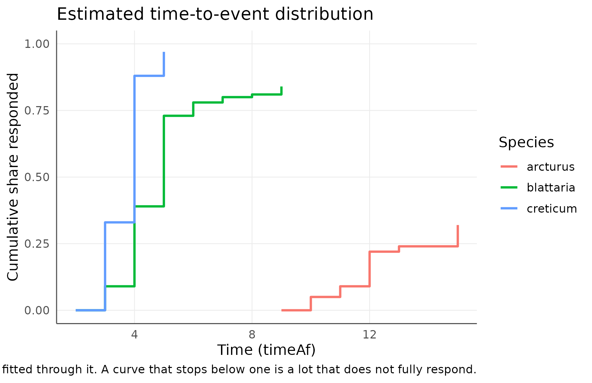
Estimated time-to-event distributions. The step function is the estimate itself, not a smooth curve fitted through cumulative percentages.
19.2 On-farm trials produce an order
r <- agri_rankings(biomass ~ cultivar, base, block = block)
r$summary
#> item blocks mean_rank rank_sum wins win_share
#> 1 C2 20 4.65 NA 3 0.15
#> 2 C3 20 6.70 NA 2 0.10
#> 3 C1 20 8.15 NA 0 0.00
r$completeness
#> blocks items observations expected_if_complete complete
#> 1 5 3 60 15 FALSEEvery rank-based test in this package already works on within-block
ranks. agri_rankings() shows them. Here the design is
complete, so rank sums are comparable and the Conover machinery of Part
III applies.
In a tricot trial, where each farmer ranks three varieties out of many, the design is incomplete and rank sums are not comparable, because a variety allocated to favourable farms collects flattering ranks for a reason that has nothing to do with the variety. The function detects that, withholds the rank sums, and keeps the pairwise record, which is made inside blocks.
plot(r, type = "pairwise")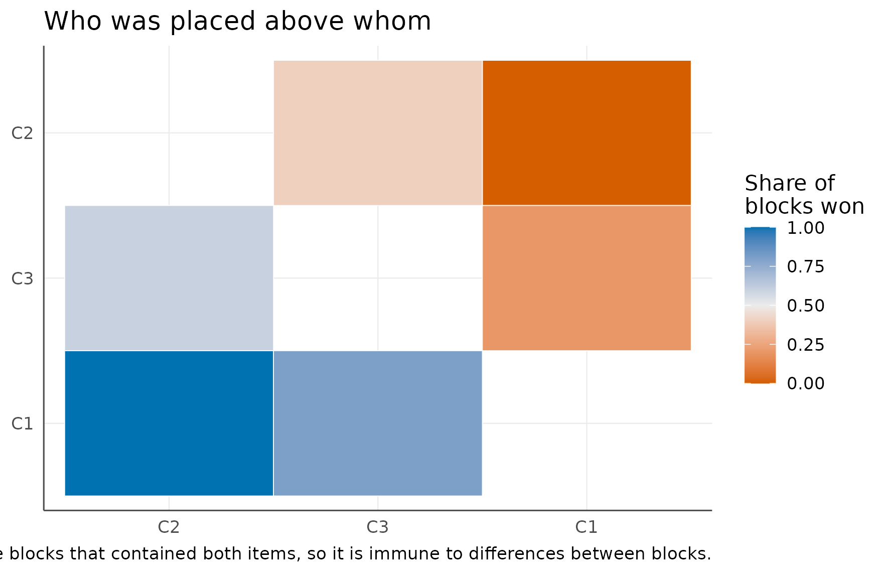
Share of blocks in which the row item was placed above the column item. Each cell uses only the blocks containing both.
20. Does the conclusion depend on one analytical choice?
20.1 Sensitivity across admissible engines
sens <- agri_sensitivity(fit, methods = c("primary", "permuco"))
sens$table
#> method effect p_value note
#> primary.1 primary cultivar 2.047132e-10
#> primary.2 primary salinity_f 3.226862e-18
#> primary.3 primary cultivar:salinity_f 3.702442e-01
#> permuco.1 permuco .agri_block 2.408443e-01
#> permuco.2 permuco cultivar 7.344754e-08
#> permuco.3 permuco salinity_f 0.000000e+00
#> permuco.4 permuco cultivar:salinity_f 4.924299e-01
#> permuco.5 permuco Residuals NA
sens$interpretation
#> [1] "Differences across methods quantify model sensitivity. They must not be used to choose the smallest p-value."Every analysis contains choices that are defensible but not unique. A sensitivity analysis runs the admissible alternatives and reports whether the conclusion survives them.
Read it as follows. If the alternatives agree, the conclusion does not rest on the choice, and that is worth one sentence in the results. If they disagree, the disagreement is the finding, and reporting only the convenient one is misconduct rather than simplification.
20.2 Several responses at once
bt <- agri_batch(des, responses = "biomass")
bt$summary
#> response effect p_value status
#> 1 biomass cultivar 2.047132e-10 ok
#> 2 biomass salinity_f 3.226862e-18 ok
#> 3 biomass cultivar:salinity_f 3.702442e-01 okagri_batch() repeats one declared design across several
responses without changing the right-hand side. That constancy is the
point: the temptation in a multi-response study is to adjust the model
per response until each one is significant, and the batch interface
makes that impossible by construction.
21. Publication-ready tables
21.1 From a fitted object to a table
agri_table(fit, what = "omnibus", format = "data.frame")
#> Term F Df Df.res Pr(>F) effect
#> 1 cultivar 38.649209 2 44 2.047132e-10 cultivar
#> 2 salinity_f 83.755809 3 44 3.226862e-18 salinity_f
#> 3 cultivar:salinity_f 1.113167 6 44 3.702442e-01 cultivar:salinity_f
agri_table(fit, what = "effects", format = "data.frame")
#> cell n median mean_rank
#> 1 C1::0 5 17.91560 44.2
#> 2 C1::2 5 17.00924 28.4
#> 3 C1::4 5 15.12592 13.8
#> 4 C1::6 5 14.23396 4.8
#> 5 C2::0 5 19.93798 56.6
#> 6 C2::2 5 17.80665 40.8
#> 7 C2::4 5 17.57829 35.0
#> 8 C2::6 5 16.62329 24.8
#> 9 C3::0 5 19.33881 52.4
#> 10 C3::2 5 17.46599 35.6
#> 11 C3::4 5 16.15833 20.6
#> 12 C3::6 5 14.27567 9.0format = "auto" returns a gt object when
that package is installed, which is what a manuscript wants.
format = "data.frame" is used here so the vignette prints
plainly.
Every table this package produces carries the uncertainty of the estimates it reports. A table of point estimates without intervals is not a result; it is a summary of one realisation of the experiment.
21.2 Regression tables
agri_np_diagnostics(npfit, cv = TRUE, seed = 1)$metrics
#> n RMSE MAE MedAE bias Spearman
#> 1 60 1.084035 0.8833927 0.8806807 2.575734e-15 0.821474821.3 Table principles
- report the estimate and its interval in the same cell or in adjacent columns, never on different pages;
- state the stratum in which the comparison was made;
- state the number of resampling replicates and the seed;
- do not report a compact letter display without the effect sizes beside it;
- do not report a p-value to more digits than the resampling supports:
with
B = 999the smallest attainable value is2/1000.
22. Publication-ready figures
22.1 The observed data
agri_plot(fit, type = "interaction")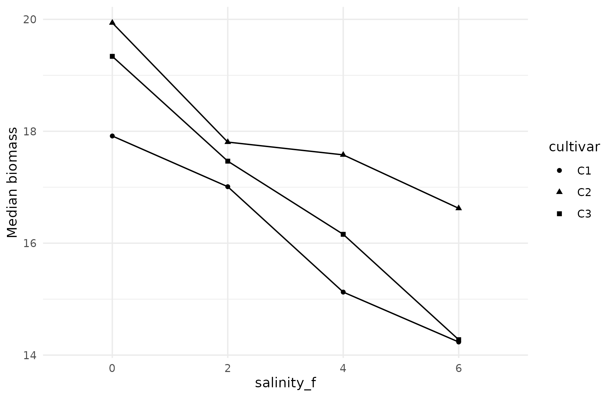
Observed biomass by cultivar and salinity.
22.2 The fitted response
agri_np_plot(npfit, points = TRUE, x_unit = "dS/m", y_unit = "g")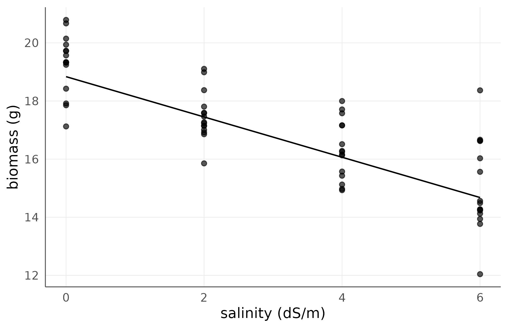
Fitted salinity response with observed plots.
22.3 Colour that survives the reader
agri_np_plot(fit_var, group = "cultivar", palette = "grey",
x_unit = "dS/m", y_unit = "g")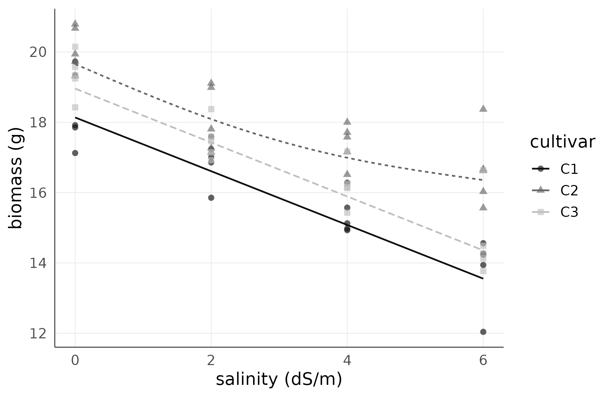
One curve per cultivar in grey tones, safe for black-and-white print.
Group colours default to a colour-blind-safe palette. Grey tones are available for journals that print in black and white, and the choice is an argument rather than a manual override, so it survives a rebuild.
22.4 Export at journal widths
p <- agri_np_plot(npfit, points = TRUE)
# One column, TIFF with LZW compression, as most agronomy journals require.
agri_save_figure(p, "figure_2.tiff", width = "one_column", dpi = 600)
# The same figure as an editable vector for a thesis.
agri_save_figure(p, "figure_2.pdf", width = "one_column")agri_save_figure() writes TIFF, PDF, SVG, EPS or PNG at
preset journal widths and keeps text and lines editable in the vector
formats. A figure exported as a bitmap at screen resolution cannot be
repaired later.
23. A reproducible report
agri_report(fit, "salinity_case_study.md")
agri_dashboard(fit)
export_results(fit, "salinity_case_study.rds")agri_report() writes a methods-and-results skeleton from
the fitted object itself, so the reported design, engine, replication
and seeds cannot drift from what was actually run.
export_results() stores the object for a later session or
for a reviewer.
24. Basic workflow: a factorial in blocks
The minimal defensible sequence, in ten steps.
Step 1: data and design
d1 <- base
des1 <- agri_design(biomass ~ cultivar * salinity_f, d1, design = "rcbd",
block = block)Step 2: validate the declaration
validate_agri_design(des1)
#> $ok
#> [1] TRUE
#>
#> $problems
#> [1] severity code message
#> <0 rows> (or 0-length row.names)
#>
#> attr(,"class")
#> [1] "agri_validation"Step 3: omnibus inference
f1 <- agri_rank(des1)
f1$omnibus
#> Term F Df Df.res Pr(>F) effect
#> 1 cultivar 38.649209 2 44 2.047132e-10 cultivar
#> 2 salinity_f 83.755809 3 44 3.226862e-18 salinity_f
#> 3 cultivar:salinity_f 1.113167 6 44 3.702442e-01 cultivar:salinity_fStep 4: read the interaction first
ip <- f1$omnibus[grep(":", f1$omnibus$effect), ]
ip[, c("effect", "Pr(>F)")]
#> effect Pr(>F)
#> 3 cultivar:salinity_f 0.3702442
cat(if (ip[["Pr(>F)"]] < 0.10)
"Interaction detected: report the cultivar effect within salinity levels.\n"
else
paste("Interaction not detected. Main effects may be read marginally,",
"but absence of evidence is not evidence of parallelism.\n"))
#> Interaction not detected. Main effects may be read marginally, but absence of evidence is not evidence of parallelism.Step 5: effect sizes on the response scale
head(as.data.frame(agri_effects(f1)), 6)
#> cell n median mean_rank
#> 1 C1::0 5 17.91560 44.2
#> 2 C1::2 5 17.00924 28.4
#> 3 C1::4 5 15.12592 13.8
#> 4 C1::6 5 14.23396 4.8
#> 5 C2::0 5 19.93798 56.6
#> 6 C2::2 5 17.80665 40.8Step 6: comparisons with compact letters
agri_cld(agri_conover(f1))
#> group letter
#> 1 C1::2 abc
#> 2 C1::4 def
#> 3 C1::6 d
#> 4 C2::0 g
#> 5 C2::2 ag
#> 6 C2::4 ab
#> 7 C2::6 bce
#> 8 C3::0 g
#> 9 C3::2 ab
#> 10 C3::4 cef
#> 11 C3::6 df
#> 12 C1::0 agStep 7: sensitivity across admissible engines
agri_sensitivity(f1, methods = c("primary", "permuco"))$table
#> method effect p_value note
#> primary.1 primary cultivar 2.047132e-10
#> primary.2 primary salinity_f 3.226862e-18
#> primary.3 primary cultivar:salinity_f 3.702442e-01
#> permuco.1 permuco .agri_block 2.408443e-01
#> permuco.2 permuco cultivar 7.344754e-08
#> permuco.3 permuco salinity_f 0.000000e+00
#> permuco.4 permuco cultivar:salinity_f 4.924299e-01
#> permuco.5 permuco Residuals NAStep 8: the design figure
agri_plot(f1, type = "interaction")
Interaction figure for the factorial analysis.
Step 9: the manuscript table
agri_table(f1, what = "omnibus", format = "data.frame")
#> Term F Df Df.res Pr(>F) effect
#> 1 cultivar 38.649209 2 44 2.047132e-10 cultivar
#> 2 salinity_f 83.755809 3 44 3.226862e-18 salinity_f
#> 3 cultivar:salinity_f 1.113167 6 44 3.702442e-01 cultivar:salinity_fStep 10: report
agri_report(f1, "basic_workflow.md")Basic interpretation template
Biomass was analysed by design-aware rank-based inference in a randomized complete block design with five blocks (
agri_design,agri_rank). The cultivar-by-salinity interaction was [significant / not significant] (p = [value]), so cultivar effects are reported [within each salinity level / marginally]. Relative marginal effects with 95% intervals are given in Table 1. Pairwise comparisons used the design-aware Conover procedure with [method] multiplicity control, and compact letters were computed within [stratum]. Conclusions were unchanged under [alternative engines], reported in the supplementary material.
25. Advanced workflow: a quantitative gradient to a recommendation
The sequence that turns a fitted curve into something a grower can act on.
The gradient-designed nitrogen experiment is used here, because Stage E requires more than four levels.
Stage A: fit the gradient in the declared design
gA <- agri_np_regression(yield ~ dose, agri_dose, method = "gam", block = block)Stage B: compare engines predictively, and do not select on p
agri_np_compare(yield ~ dose, agri_dose, methods = c("gam", "kernel"),
block = block, kfold = 5, seed = 1)
#> method n RMSE MAE MedAE bias Spearman selected_metric
#> 1 gam 40 0.2334437 0.1863484 0.1506451 -0.00721644 0.9310005 0.2334437
#> 2 kernel 40 0.3522985 0.2846290 0.2762254 0.05301697 0.8807167 0.3522985
#> failures
#> 1 0
#> 2 0Stage C: explained variation, all three indices
agri_np_diagnostics(gA, cv = TRUE, seed = 1)$r2
#> pseudo_r2 cv_r2 spearman_r2 effective_df n
#> 1 0.9545297 0.9275743 0.9090132 3.863823 40Stage D: check the fit without a distribution
agri_np_simdiag(gA, nsim = 200, seed = 1)$checks
#> check
#> 1 uniformity
#> 2 location along the gradient
#> 3 dispersion along the gradient
#> question statistic
#> 1 Are the scaled residuals uniform overall? 0.07045556
#> 2 Is the fitted mean systematically off in some part of the range? 8.03414634
#> 3 Does the spread change along the gradient? 9.63219512
#> p_value
#> 1 0.9805907
#> 2 0.3295925
#> 3 0.2103922Stage E: where is the response still changing
agri_np_significant_slope(agri_np_sizer(gA), stability = 0.8)
#> predictor stability increase_from increase_to stops_increasing_at
#> 1 dose 0.8 0 119 126
#> decrease_from decrease_to
#> 1 NA NAStage F: the location of the extreme, with its interval
agri_np_optimum_test(gA, B = 199, seed = 1, n = 80, external = FALSE)$optimum
#> level n optimum lower upper fitted_response p_boundary replicates identified
#> 1 all 40 280 280 280 5.035595 1 120 FALSEStage G: an interval for the next plot
cfA <- agri_np_conformal(gA, newdata = agri_dose, level = 0.90, seed = 1)
agri_np_coverage(cfA, data = agri_dose)$empirical
#> [1] 0.925Stage H: the poor plot as well as the typical one
suppressWarnings(
agri_np_quantile_curves(yield ~ dose, agri_dose, block = block,
quantiles = c(0.25, 0.5, 0.75), n = 40))$summary
#> qu = 0.75, log(sigma) = -3.222412 : outer Newton did not converge fully.
#> qu = 0.75, log(sigma) = -3.251921 : outer Newton did not converge fully.
#> qu = 0.75, log(sigma) = -3.30781 : outer Newton did not converge fully.
#> qu = 0.75, log(sigma) = -3.319567 : outer Newton did not converge fully.
#> quantile fitted_min fitted_max range coverage deviation tracking
#> 1 0.25 2.575306 4.974597 2.399290 0.125 -0.125 FALSE
#> 2 0.50 2.629977 5.038666 2.408689 0.575 0.075 TRUE
#> 3 0.75 2.684087 5.134853 2.450766 0.850 0.100 TRUEAdvanced interpretation template
The salinity response was modelled without assuming a functional form (
agri_np_regression, GAM engine, block retained as an adjustment term). Predictive comparison across admissible engines is reported in Table S1; the engine was not selected on the basis of any p-value. Explained variation was [pseudo_r2] on the fitted values and [cv_r2] out of fold. Simulation-based quantile residuals showed [no departure / a departure] in the location check along the gradient (p = [value]).Biomass declined significantly up to [value] dS/m, with no evidence of further change beyond it, at agreement across 80% of bandwidths (
agri_np_sizer). The location of the fitted extreme [was / was not] identified (p_boundary = [value]); [where identified, its 95% interval was [a, b]].A split-conformal interval covering a future plot at [level] had mean width [value] within an observed block and [value] for an unobserved field. Coverage was verified at [value].
All resampling used B = [value] replicates and seed [value].
26. Dropping the block because the test is simpler
The mistake. Running a Kruskal-Wallis test on data from a blocked design, because the block “was not of interest”.
Why it is wrong. The block was removed from the treatment comparison by the randomization. Discarding it in the analysis puts the between-block variation back into the residual, which inflates it and reduces power. The test is valid for an experiment that was not performed.
What prevents it. agri_design() records
the block, and agri_rank() refuses an engine that cannot
carry it. See section 5.3.
27. Treating a quantitative treatment as a factor without saying so
The mistake. Analysing four salinity levels as four unrelated categories, and reporting only compact letters.
Why it is wrong. The shape of the response is the agronomic content. Letters say which of the four tested levels differ, and nothing about what happens between them, which is where a recommendation lives.
What prevents it. agri_np_regression()
and Part IV. Reporting both analyses is the answer, not choosing
one.
28. Selecting the engine by the p-value it produces
The mistake. Fitting several smoothers and reporting the one whose treatment effect reached significance.
Why it is wrong. The reported p-value is then the minimum of several, and its distribution under the null is no longer the one being quoted.
What prevents it. agri_np_compare()
reports cross-validated predictive error only, and nothing in it feeds
back into the inferential engine. See section 10.2.
29. Reporting the fitted extreme as a recommendation
The mistake. Reading the maximum or minimum of a fitted curve as the recommended level, without checking whether it is interior.
Why it is wrong. An extreme has to land somewhere. If the response flattens rather than turning over, it lands on the boundary of the tested range, and the boundary is a property of the experimental design, not of the crop.
What prevents it.
agri_np_optimum_test() reports p_boundary and
identified, and agri_np_significant_slope()
provides the defensible alternative statement. See sections 11 and
12.
30. Comparing optima across curves the model forced to be parallel
The mistake. Fitting y ~ x + cultivar
and comparing the optimum of each cultivar.
Why it is wrong. An additive adjustment shifts curves without changing their shape. Parallel curves share one optimum by construction, so the comparison describes the model, not the experiment.
What prevents it.
agri_np_optimum_test() detects parallel fitted curves and
refuses, pointing to gam_structure = "varying". See section
12.3.
31. Quoting a confidence band as if it covered a plot
The mistake. Reporting the band around a fitted curve as the range in which a grower’s yield will fall.
Why it is wrong. A confidence band covers the average response. An individual plot varies far more, typically by a factor of several.
What prevents it. agri_np_conformal()
produces the interval that covers a future plot, with a finite-sample
guarantee. The three widths are contrasted in section 14.1.
32. Rounding a continuous optimum to a whole number
The mistake. Fitting a continuous curve over plant density, finding the maximum at 7.4 plants, and recommending 7.
Why it is wrong. The rounded value is the neighbour of an inadmissible one, not the best admissible decision. They can differ.
What prevents it.
predictor_support = "observed_integer" and
agri_integer_optimum(), which evaluate the response on the
admissible support. See section 16.
33. Deleting the seeds that never germinated
The mistake. Removing rows with no event before analysis, or forcing the germination curve up to 100%.
Why it is wrong. A seed that never germinates is an observation, not a missing value. Deleting it overstates the capacity of the lot, sometimes grossly.
What prevents it. agri_np_timetoevent()
requires end = Inf for censored subjects, warns when no row
has it, and reports capacity separately from speed. See section
19.1.
34. Summing ranks across an incomplete design
The mistake. Ranking varieties within farms in an on-farm trial where each farmer saw only three of thirty, and comparing the rank sums.
Why it is wrong. A variety allocated to favourable farms collects flattering ranks for a reason unrelated to the variety. The comparison measures allocation as much as genetics.
What prevents it. agri_rankings()
detects incompleteness, withholds the rank sums, and keeps the pairwise
record, which is made inside blocks. See section 19.2.
35. Reading non-significance as equality
The mistake. “The cultivars did not differ” after a test that did not reach the chosen level.
Why it is wrong. Failing to detect a difference is not evidence of its absence, particularly with five blocks. The statement conflates a decision with a finding.
What prevents it. agri_effects()
reports the effect size with its interval, so a reader can see whether
an agronomically important difference remains compatible with the data.
See section 8.3.
36. Treating a diagnostic as a model-selection rule
The mistake. Fitting several models and keeping the one whose residual diagnostics look best.
Why it is wrong. Diagnostics answer whether a fit describes the data. Used repeatedly as a filter, they become a selection procedure whose properties are unknown, and the final p-value no longer means what it says.
What prevents it. agri_np_simdiag()
returns descriptions with the question each answers, and the
documentation states that nothing in it selects a method. See section
15.3.
37. Using an experimental engine without its label
The mistake. Using the native incomplete repeated-measures engine in a manuscript because it ran without error.
Why it is wrong. Its calibration study is not complete. Running without error is not evidence of correct Type-I error.
What prevents it. The engine is labelled
experimental in its own documentation, in
VALIDATION_PLAN.md, and in this vignette. See section
18.3.
38. Choose by the question, not by the name
| Your situation | Start here | Then |
|---|---|---|
| I have a field notebook and no analysis yet | agri_design() |
validate_agri_design(),
design_summary()
|
| One factor, no blocks | np_crd() |
agri_effects(), agri_conover()
|
| One factor in blocks | np_rcbd() |
agri_conover(), agri_cld()
|
| Two or more crossed factors | np_factorial() |
read the interaction first |
| Whole plots and subplots | np_splitplot() |
np_splitsplit(), np_stripplot()
|
| Repeated measurements on the same unit | np_repeated() |
agri_repeated(),
agri_missing_report()
|
| Several responses on the same units | agri_multivariate() |
agri_table() |
| Several sites or years | agri_multienv() |
check the GxE term |
| A quantitative treatment, and I want the shape | agri_np_regression() |
agri_np_plot(), agri_np_diagnostics()
|
| I need to know where the response stops changing | agri_np_sizer() |
agri_np_significant_slope() |
| I need to recommend a level, with an interval | agri_np_optimum_test() |
check p_boundary
|
| The treatment can only be a whole number | agri_np_regression(predictor_support=) |
agri_integer_optimum(),
agri_integer_confset()
|
| I need an interval for the next plot | agri_np_conformal() |
agri_np_coverage() |
| I care about the poor plots, not the average | agri_np_quantile_curves() |
plot(type = "spread") |
| I want to know whether the model describes the data | agri_np_simdiag() |
read the location row |
| My data are germination counts | agri_np_timetoevent() |
report capacity and speed apart |
| My data are farmer rankings | agri_rankings() |
check completeness first |
| I want to know if the conclusion is fragile | agri_sensitivity() |
agri_batch() |
| I need a manuscript table | agri_table() |
agri_format_ci() |
| I need a journal figure |
agri_np_plot(), agri_plot()
|
agri_theme(), agri_save_figure()
|
| I need a reproducible record | agri_report() |
export_results() |
39. Choose by what you must not do
| Temptation | What to do instead |
|---|---|
| drop the block because the test is simpler | declare it and accept the refusal |
| pick the engine with the best p-value |
agri_np_compare() for prediction only |
| round a continuous optimum to an integer | declare the integer support |
| quote the fitted extreme as a recommendation |
agri_np_optimum_test(), read
p_boundary
|
| quote a confidence band as a plot interval | agri_np_conformal() |
| report letters without effect sizes | report both |
| delete the non-germinated seeds | code them as end = Inf
|
| sum ranks in an incomplete design | report the pairwise record |
| call non-significance equality | report the interval |
40. What a manuscript using this package should contain
Design
- the design as declared, including the blocking factor and the experimental unit for each treatment;
- the number of blocks, replicates and plots, and any missing cells;
- the randomization actually used, if it differed from the intended one.
Analysis
- the engine, named, and the reason it was admissible for this design;
- that the engine was not selected on the basis of a response p-value;
- the multiplicity control used for any set of comparisons;
- the stratum in which comparisons and compact letters were computed;
- the number of resampling replicates and the random seed.
Results
- the omnibus result and the interaction, read before the main effects;
- effect sizes with intervals, not only p-values or letters;
- for a quantitative treatment: the fitted curve, the explained-variation indices, and the interval over which the response is still changing;
- for a recommendation: the interval for the location
of the optimum, and the value of
p_boundary; if not identified, say so and report the SiZer statement instead; - for a plot-level recommendation: a conformal interval, with its scope stated;
- for an integer treatment: the optimum, the probability mass over decisions, and the confidence set;
- for germination data: capacity and speed reported separately, with the censored subjects included;
- for ranking data: whether the design was complete.
Assurance
- the model check, reported whatever its result;
- the sensitivity analysis across admissible engines;
- the missing-data assumption, if any values were missing;
- the package version and
sessionInfo().
41. A note on what not to report
Do not report a treatment mean beside a rank-based analysis; the analysis did not estimate one. Do not report a compact letter display as if it established equality. Do not report an optimum without its uncertainty. Do not report an R-squared-like index alone beside a flexible fit. Do not report a p-value to more digits than the resampling supports.
Appendix A. Exported function registry
A.1 Design
| Function | Purpose |
|---|---|
agri_design() |
declare the randomization structure explicitly |
validate_agri_design() |
audit the declaration against the data |
design_summary() |
describe the declared design |
simulate_agri() |
generate teaching data for a named design |
agri_methods() |
list the available engines and what each assumes |
A.2 Design-aware inference
| Function | Purpose |
|---|---|
agri_rank() |
omnibus inference for a declared design |
np_crd() |
one factor, completely randomized |
np_rcbd() |
one factor in complete blocks |
np_factorial() |
crossed factors |
np_splitplot() |
whole plots and subplots |
np_splitsplit() |
three randomization levels |
np_stripplot() |
two strips crossed within blocks |
np_repeated() |
repeated measurements on the same unit |
agri_repeated() |
repeated measures with backend selection |
incomplete_wild_rank_test() |
experimental wild-bootstrap engine |
A.3 Effects, comparisons and contrasts
| Function | Purpose |
|---|---|
agri_effects() |
relative marginal effects with intervals |
agri_pairs() |
pairwise comparisons |
agri_conover() |
design-aware Conover comparisons |
agri_cld() |
compact letters, computed within strata |
agri_contrast() |
planned contrasts |
agri_format_ci() |
estimate and interval as reportable text |
A.4 Regression over a gradient
| Function | Purpose |
|---|---|
agri_np_regression() |
fit a nonparametric or shape-aware curve |
agri_np_predict() |
predict, with an analytic interval where defined |
agri_np_plot() |
the standard regression figures |
agri_np_curves() |
overlay the curves of several engines |
agri_np_derivative() |
derivative of the fitted curve |
agri_np_optimum() |
the fitted extreme, as a point |
agri_np_bootstrap() |
resampling intervals and bands for the curve |
agri_np_compare() |
predictive comparison of engines |
agri_np_diagnostics() |
explained variation and predictive error |
agri_np_significance() |
bootstrap tests for kernel fits |
agri_np_specification() |
is a prespecified equation too restrictive |
agri_np_interactive() |
interactive layer, when plotly is present |
agri_np_forest() |
forest plot of coefficient intervals |
agri_np_levels() |
the response at each level of a factor |
A.5 From a curve to a recommendation
| Function | Purpose |
|---|---|
agri_np_sizer() |
where the derivative is significant, across bandwidths |
agri_np_significant_slope() |
the same, as a reportable sentence |
agri_np_optimum_test() |
interval and tests for the location of an optimum |
agri_np_quantile_curves() |
conditional quantiles and their spread |
agri_np_block_effects() |
fixed and shrunk block effects side by side |
A.6 Distribution-free uncertainty and checking
| Function | Purpose |
|---|---|
agri_np_conformal() |
interval covering a future plot, with a guarantee |
agri_np_coverage() |
empirical coverage of that interval |
agri_np_simdiag() |
simulation-based quantile residuals |
A.7 Integer decision support
| Function | Purpose |
|---|---|
agri_integer_predict() |
prediction restricted to admissible integers |
agri_integer_optimum() |
best admissible whole-number decision |
agri_integer_difference() |
gain from one more unit |
agri_integer_threshold() |
economic or agronomic threshold rules |
agri_integer_efficiency() |
response per unit of input |
agri_integer_bootstrap() |
probability mass over admissible decisions |
agri_integer_confset() |
discrete confidence set |
A.8 Missing data, several responses, several sites
| Function | Purpose |
|---|---|
agri_missing_report() |
describe the missingness pattern |
agri_missing_sensitivity() |
does the conclusion survive the assumption |
agri_multivariate() |
several responses on the same units |
agri_multienv() |
several sites or years, and GxE |
agri_sensitivity() |
the conclusion across admissible engines |
agri_batch() |
one design, several responses |
A.9 Data that are not measurements
| Function | Purpose |
|---|---|
agri_np_timetoevent() |
interval-censored germination and emergence |
agri_rankings() |
within-block rankings and on-farm trials |
A.10 Trend, covariance and power
| Function | Purpose |
|---|---|
agri_trend() |
trend across ordered levels |
agri_ancova() |
rank-based covariance adjustment |
agri_power() |
power for a declared design |
A.11 Communication
| Function | Purpose |
|---|---|
agri_table() |
manuscript tables from a fitted object |
agri_plot() |
the standard design figures |
agri_interactive() |
interactive layer for design figures |
agri_theme() |
the shared journal theme |
agri_save_figure() |
export at preset journal widths |
agri_report() |
reproducible methods-and-results skeleton |
agri_dashboard() |
assembled view of one analysis |
export_results() |
store the fitted object |
Appendix B. A single starter script
Everything a first analysis needs, in one block.
library(agriRank)
# 1. Declare the randomization.
des <- agri_design(yield ~ treatment, data = mydata, design = "rcbd",
block = block)
validate_agri_design(des)
# 2. Omnibus inference in that structure.
fit <- agri_rank(des)
fit$omnibus
# 3. Effect sizes with intervals, then comparisons with letters.
agri_effects(fit)
agri_cld(agri_conover(fit))
# 4. If the treatment is a quantitative gradient, describe its shape.
np <- agri_np_regression(yield ~ dose, mydata, method = "gam", block = block)
agri_np_diagnostics(np, cv = TRUE, seed = 1)$r2
agri_np_plot(np, points = TRUE)
# 5. Say where the response is still changing, not where the fit peaks.
agri_np_significant_slope(agri_np_sizer(np), stability = 0.8)
# 6. If a level is to be recommended, give the interval for its location.
agri_np_optimum_test(np, B = 999, seed = 1)
# 7. If the recommendation concerns a plot, give a conformal interval.
cf <- agri_np_conformal(np, level = 0.90, seed = 1)
agri_np_coverage(cf, data = mydata)
# 8. Check the fit without assuming a distribution.
agri_np_simdiag(np, nsim = 500, seed = 1)
# 9. Ask whether the conclusion survives another admissible engine.
agri_sensitivity(fit, methods = c("primary", "permuco"))$table
# 10. Record everything.
agri_report(fit, "analysis.md")
export_results(fit, "analysis.rds")
sessionInfo()Appendix C. Where to go next
| If you want | Read |
|---|---|
| the design declaration in detail | Design Foundations, CRD, and RCBD |
| comparisons and compact letters in detail | Effects, Conover, Contrasts, and Factorial Inference |
| split-plot, strip-plot, trend, ANCOVA, power | Hierarchical Plot Designs, Trends, ANCOVA, and Power |
| repeated measures and missing data | Repeated Measures and Missing Longitudinal Data |
| several responses or sites | Multivariate, Multi-Environment, Batch, and Sensitivity Workflows |
| the regression engines | Nonparametric and Shape-Aware Regression for Agronomic Gradients |
| integer decisions | Integer-Support Nonparametric Regression for Agronomy |
| figures, tables and reports | Graphics, Tables, Reports, and Reproducibility |
| the theory and the pitfalls | Methodological Foundations, State of the Art, and Common Mistakes |
| conformal prediction and model checking | Distribution-Free Uncertainty and Model Checking |
| optima, quantiles and block structure | Optima, Quantiles, and How the Block Enters the Model |
| germination and ranking data | Time-to-Event and Ranking Data |
Final perspective
The functions in this package are ordinary. What is not ordinary is the number of places where they stop.
A design declaration that refuses an engine. A comparison of optima
that refuses parallel curves. A quantile that refuses a tail the
replication cannot resolve. A whole-lot median that returns
NA because the lot never reaches half. A rank sum withheld
because the design is incomplete. A derivative refused on an integer
support.
Each of those refusals replaces a number that would have looked like an answer. That is the entire design philosophy, and it is worth stating plainly: the most useful thing a statistical package can do for an agronomist is to be clear about what the experiment cannot support.
The remaining scientific limitation of this version is documented
rather than hidden. The permutation backend shows a calibration failure
in split-split-plot and strip-plot strata, reported in
VALIDATION_PLAN.md, and the native incomplete
repeated-measures engine carries an experimental label until its
calibration study is complete. Neither is repaired by test coverage, and
neither should be used in a manuscript without reading those documents
first.